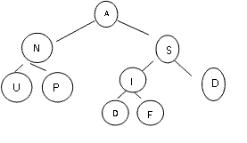

| Field | Value |
|---|---|
| ID | 634936 [created: 2013-06-27 05:27:33, author: mikeyg (xmikey), avg difficulty: 0.5000] |
| Question | For the binary search algorithm implemented on a sorted list stored in an array, what is its running time? |
| A | O(1) |
| *B* | O(log2 n) |
| C | O(n) |
| D | O(n log2 n) |
| E | O(n2) |
| Explanation | Binary search repeately "throws away" half of the list still under investigation when looking for a given value in the list. Hence the run time of the algorithm is the number of times a values can be divided in two, until one reaches the value 1: O(log2 n) |
| Tags | Nested-Block-Depth-2-two-nested, ATT-Transition-Code_to_CSspeak, Contributor_Michael_Goldweber, Skill-PureKnowledgeRecall, ATT-Type-Why, Difficulty-2-Medium, TopicSimon-AlgorithmComplex-BigO, Block-Horizontal-2-Struct_Control, ExternalDomainReferences-1-Low, Block-Vertical-4-Macro-Structure, Bloom-3-Analysis, Language-none-none-none, CS1, LinguisticComplexity-1-Low, CodeLength-NotApplicable, TopicWG-Searching-Binary |
| Field | Value |
|---|---|
| ID | 633218 [created: 2013-06-12 05:29:11, author: crjjrc (xchris), avg difficulty: 1.0000] |
| Question |
Suppose we're modeling a person with just name and age. The notation {"Javier", 31} refers to a 31-year-old named Javier. Now, suppose we have this collection of five people: {"Lupe", 29} {"Dean", 29} {"Lars", 28} {"Javier", 31} {"Di", 28} Which of the following ordered collections is the result of applying a stable sort to this collection, where the sorting criteria orders by age? |
| A | {"Javier", 31} |
| *B* | {"Javier", 31} |
| C |
{"Lars", 28} {"Dean", 29} {"Lupe", 29} |
| D |
{"Lars", 28} {"Lupe", 29} |
| E |
{"Di", 28} {"Lars", 28} {"Lupe", 29} |
| Explanation | A stable sort preserves the relative order of elements with the same keys. Thus, Lupe must appear before Dean and Lars must appear before Di. Only the correct answer maintains this order. |
| Tags | Contributor_Chris_Johnson, ATT-Transition-ApplyCSspeak, Skill-PureKnowledgeRecall, ATT-Type-How, Difficulty-2-Medium, Block-Horizontal-2-Struct_Control, ExternalDomainReferences-1-Low, TopicSimon-CollectionsExceptArray, Block-Vertical-4-Macro-Structure, Bloom-2-Comprehension, Language-none-none-none, LinguisticComplexity-1-Low, CS2, CodeLength-NotApplicable, TopicWG-Sorting-Other, ConceptualComplexity-2-Medium, Nested-Block-Depth-0-no_ifs_loops |
| Field | Value |
|---|---|
| ID | 632268 [created: 2013-06-18 10:16:50, author: kate (xkate), avg difficulty: 0.0000] |
| Question | Which data structure provides direct access to elements using indexes? |
| *A* | an array |
| B | a linked list |
| C | both |
| D | neither |
| Explanation | If you declare an array in languages that have them, such as Pascal, C, C++, Java, etc., you can access an element of the array by giving the index of the value to be retrieved. |
| Tags | ATT-Transition-ApplyCSspeak, Contributor_Kate_Sanders, Skill-PureKnowledgeRecall, ATT-Type-How, Difficulty-1-Low, Block-Horizontal-1-Struct_Text, ExternalDomainReferences-0-WWWWWW, TopicSimon-Arrays, Block-Vertical-1-Atom, TopicWG-LinkedLists, Bloom-1-Knowledge, Language-none-none-none, LinguisticComplexity-1-Low, CS2, CodeLength-NotApplicable, ConceptualComplexity-1-Low, Nested-Block-Depth-0-no_ifs_loops |
| Field | Value |
|---|---|
| ID | 632247 [created: 2013-06-18 08:44:55, author: kate (xkate), avg difficulty: 0.0000] |
| Question |
The |
| A | adds a new item at the bottom of the Stack |
| B | returns without removing the top item on the Stack |
| *C* | removes and returns the top item on the Stack |
| D | adds a new item at the top of the Stack |
| E | returns true if the Stack is empty and otherwise false |
| Explanation | "pop" is the traditional term for removing an element from a stack. By definition, the element removed from a stack is always the one that was added most recently, or the one at the "top." |
| Tags | ATT-Transition-ApplyCSspeak, Contributor_Kate_Sanders, Skill-DesignProgramWithoutCoding, ATT-Type-How, Difficulty-2-Medium, TopicWG-ADT-Stack-DefInterfaceUse, ExternalDomainReferences-1-Low, Block-Horizontal-3-Funct_ProgGoal, Block-Vertical-2-Block, Bloom-2-Comprehension, Language-none-none-none, LinguisticComplexity-1-Low, TopicSimon-MethodsFuncsProcs, CS2, CodeLength-lines-00-to-06_Low, ConceptualComplexity-2-Medium, Nested-Block-Depth-0-no_ifs_loops |
| Field | Value |
|---|---|
| ID | 632315 [created: 2013-06-18 12:44:36, author: kate (xkate), avg difficulty: 0.0000] |
| Question | The dequeue operation: |
| A | adds a new item at the front of a queue |
| B | returns without removing the item at the front of a queue |
| *C* | removes and returns the item at the front of a queue |
| D | adds a new item at the end of a queue |
| E | returns true if a queue is empty and otherwise false |
| Explanation | dequeue is the name for the operation that removes an element from a queue. Specifically, it removes the item that was added *first* (just as the first person in a line gets served first). |
| Tags | ATT-Transition-ApplyCSspeak, Contributor_Kate_Sanders, Skill-PureKnowledgeRecall, TopicWG-ADT-Queue-DefInterfaceUse, ATT-Type-How, Difficulty-1-Low, ExternalDomainReferences-1-Low, Block-Horizontal-3-Funct_ProgGoal, Block-Vertical-2-Block, Bloom-1-Knowledge, Language-none-none-none, LinguisticComplexity-1-Low, CS2, CodeLength-NotApplicable, ConceptualComplexity-1-Low, Nested-Block-Depth-0-no_ifs_loops |
| Field | Value |
|---|---|
| ID | 632174 [created: 2013-06-17 23:50:06, author: tclear (xtony), avg difficulty: 1.0000] |
| Question |
What does this function do? void iFunction(char sz[]) { int iLen = 0; while ( sz[iLen]) sz[iLen++] = '-'; } |
| A | Copies a string |
| B |
Finds and returns a character in a string |
| *C* |
Replaces all letters in a string with - characters |
| D | Finds the length of a string |
| E | Finds and returns the end of a string |
| Explanation | The Function iterates through the array to the end, replacing each character with the "-" character |
| Tags | Skill-Trace_IncludesExpressions, Difficulty-2-Medium, Block-Horizontal-2-Struct_Control, TopicSimon-Arrays, Block-Vertical-2-Block, Language-C, Bloom-2-Comprehension, TopicSimon-LoopsSubsumesOperators, CS1, CodeLength-lines-06-to-24_Medium |
| Field | Value |
|---|---|
| ID | 632095 [created: 2013-06-17 20:34:00, author: marzieh (xmarzieh), avg difficulty: 2.0000] |
| Question |
What will be printed? public static void main(String [] args){ int[] array = {1, 2, 3, 4, 1, 2, 3, 4}; System.out.print( specialSum(array, 3)); } public static int specialSum (int[] integerArray , int index){ int sum = index % 2 ==0 ? integerArray [index]*2 : integerArray [index] +1; if( index == 0) return sum; return sum + specialSum(integerArray, index-1); } |
| *A* | 16 |
| B | 32 |
| C | 15 |
| D | 30 |
| Field | Value |
|---|---|
| ID | 635077 [created: 2013-06-30 10:54:59, author: edwards@cs.vt.edu (xstephen), avg difficulty: 0.0000] |
| Question |
Consider this code segment: boolean x = false;
boolean y = true;
boolean z = true;
System.out.println( (x || !y) && (!x || z) );
What value is printed? |
| A | true |
| *B* | false |
| C | Nothing, there is a syntax error |
| Explanation | Since |
| Tags | ATT-Transition-ApplyCode, Contributor_Stephen_Edwards, Skill-Trace_IncludesExpressions, ATT-Type-How, Difficulty-1-Low, Block-Horizontal-2-Struct_Control, ExternalDomainReferences-1-Low, Block-Vertical-2-Block, Language-Java, Bloom-2-Comprehension, TopicSimon-LogicalOperators, CS1, LinguisticComplexity-1-Low, CodeLength-lines-00-to-06_Low, ConceptualComplexity-1-Low, Nested-Block-Depth-0-no_ifs_loops |
| Field | Value |
|---|---|
| ID | 632165 [created: 2013-06-17 23:32:51, author: tclear (xtony), avg difficulty: 0.0000] |
| Question |
What is output by the code shown in the question below. Think aboutit carefully - it may be a bit tricky! void main(void) { static int aiTable[10] = {0,1,2,3,4,5,6,7,8,9}; int i; for(i = 0; i < 10; i++) { if( !(aiTable[i] % 2)) printf("%d", aiTable[i]); } } |
| *A* | 02468 |
| B | 13579 |
| C | 01234 |
| D | 56789 |
| E | 0123456789 |
| Explanation |
Modulus is the remainder of integer division of two numbers with the result placed somewhere. The modulus function of a and b, a being the dividend and b being the divisor, is a - int(a/b) * b. For example, using integer results... 47/4 = 11 Check it: 47 = 11*4 + 3 Source http://wiki.answers.com/Q/What_is_the_difference_between_division_and_modulus_in_%27C%27_language In this case the negatively phrased line of code "if( !(aiTable[i] % 2))" is an alternative way of expressing the more common phrasing of a modulus arithmetic expression as given below If you wanted to know if a number was odd or even, you could use modulus to quickly tell you by asking for the remainder of the number when divided by 2. #include <iostream> using namespace std; int main() { int num; cin >> num; // num % 2 computes the remainder when num is divided by 2 if ( num % 2 == 0 ) { cout << num << " is even "; } return 0; } The key line is the one that performs the modulus operation: "num % 2 == 0". A number is even if and only if it is divisible by two, and a number is divisible by another only if there is no remainder. source: http://www.cprogramming.com/tutorial/modulus.html |
| Tags | Contributor_Tony_Clear, Skill-Trace_IncludesExpressions, Difficulty-2-Medium, Block-Horizontal-1-Struct_Text, TopicSimon-Arrays, Block-Vertical-2-Block, Language-C, Bloom-2-Comprehension, TopicSimon-LoopsSubsumesOperators, CS1, TopicSimon-Params-SubsumesMethods, CodeLength-lines-06-to-24_Medium |
| Field | Value |
|---|---|
| ID | 631460 [created: 2013-06-15 08:50:28, author: xrobert (xrobert), avg difficulty: 0.0000] |
| Question |
In Java, which of the following is not considered to be part of the signature of a method? |
| *A* | Return type |
| B | Method name |
| C | Number of parameters |
| D | Types and order of parameters |
| E | All of the above are part of the signature |
| Explanation | In Java the return type is not considered as part of the signature. Why should I care? If i want to use method overloading (have different methods with the same name) the methods must have unique signatures, and so i cannot have 2 methods with the same name that have the same number, type, and order of parameters that differ on return type. |
| Tags | Contributor_Robert_McCartney |
| Field | Value |
|---|---|
| ID | 631458 [created: 2013-06-15 08:20:29, author: kate (xkate), avg difficulty: 0.0000] |
| Question |
Given the code int x = 27;
int y = 12;
What is the value of the expression |
| A | 2 |
| B | 2.25 |
| *C* | 3 |
| D | 3.0 |
| E | None of the above. |
| Explanation | In Java, the % operator means "remainder." So this question is asking, "What is the remainder when you divide 27 by 12?" 27 - (2*12) = 3, so the answer is 3. |
| Tags | ATT-Transition-ApplyCode, Contributor_Kate_Sanders, Skill-Trace_IncludesExpressions, Difficulty-1-Low, Block-Horizontal-2-Struct_Control, TopicSimon-ArithmeticOperators, TopicSimon-Assignment, Block-Vertical-1-Atom, TopicSimon-DataTypesAndVariables, Language-Java, Bloom-2-Comprehension, LinguisticComplexity-1-Low, CS1, CodeLength-lines-00-to-06_Low, ConceptualComplexity-1-Low, Nested-Block-Depth-0-no_ifs_loops |
| Field | Value |
|---|---|
| ID | 631452 [created: 2013-06-15 07:26:33, author: kate (xkate), avg difficulty: 0.0000] |
| Question |
Given the code int x = 27;
int y = 12;
What is the value of the expression |
| *A* | 2 |
| B | 2.25 |
| C | 3 |
| D | 3.0 |
| E | None of the above. |
| Explanation |
In Java, when we divide one int value by another, we get another integer. You can start by doing the usual division (which would give you 2.25 in this case) and then remove the decimal part. |
| Tags | ATT-Transition-ApplyCode, Contributor_Kate_Sanders, Skill-Trace_IncludesExpressions, ATT-Type-How, Difficulty-1-Low, Block-Horizontal-1-Struct_Text, ExternalDomainReferences-1-Low, TopicSimon-ArithmeticOperators, TopicSimon-Assignment, Block-Vertical-1-Atom, TopicSimon-DataTypesAndVariables, Language-Java, Bloom-2-Comprehension, LinguisticComplexity-1-Low, CS1, CodeLength-lines-00-to-06_Low, ConceptualComplexity-1-Low, Nested-Block-Depth-0-no_ifs_loops |
| Field | Value |
|---|---|
| ID | 633244 [created: 2013-06-13 00:05:32, author: crjjrc (xchris), avg difficulty: 1.0000] |
| Question | Suppose you have a binary search tree with no right children. Furthermore, key A is considered greater than key B if A.compareTo(B) >= 0. Which of the following explains how this tree may have ended up this way? |
| A | It was filled in ascending order. |
| B | The root value was the minimum. |
| C | All keys were identical. |
| D | The tree is a preorder tree. |
| *E* | It was filled in descending order. |
| Explanation | If the greatest node was inserted first, with each successive node having a lesser key than its predecessor, we'd end up with all left children. Adding nodes with identical keys produces right children. |
| Tags | Contributor_Chris_Johnson, ATT-Transition-ApplyCSspeak, Skill-PureKnowledgeRecall, Difficulty-1-Low, ATT-Type-Why, Block-Horizontal-2-Struct_Control, ExternalDomainReferences-1-Low, Block-Vertical-2-Block, TopicSimon-CollectionsExceptArray, Bloom-2-Comprehension, Language-none-none-none, LinguisticComplexity-1-Low, CS2, CodeLength-NotApplicable, ConceptualComplexity-2-Medium, Nested-Block-Depth-0-no_ifs_loops, TopicWG-Trees-Search-NotBalanced |
| Field | Value |
|---|---|
| ID | 634934 [created: 2013-06-27 07:19:07, author: mikeyg (xmikey), avg difficulty: 1.0000] |
| Question |
What is the logic error in the following implementation of sequential search? 1 def sequentialSearch(listOfValues): 11 else: 12 targetFound = False
|
| A | Line 10 |
| B | Line 7 |
| *C* | Lines 11-12 |
| D | Line 8 |
| E | None of the above. |
| Explanation | The else clause resets targetFound if a match is ever found. Hence, in effect, with this else clause present, only the test with the last element in the list is "remembered." |
| Tags | Nested-Block-Depth-2-two-nested, ATT-Transition-Code_to_CSspeak, Contributor_Michael_Goldweber, ATT-Type-How, SkillWG-AnalyzeCode, Difficulty-2-Medium, Block-Horizontal-2-Struct_Control, ExternalDomainReferences-1-Low, TopicSimon-Arrays, Block-Vertical-2-Block, Bloom-3-Analysis, Language-Python, CS1, LinguisticComplexity-1-Low, TopicWG-Searching, CodeLength-lines-06-to-24_Medium, ConceptualComplexity-2-Medium |
| Field | Value |
|---|---|
| ID | 633255 [created: 2013-05-25 08:56:37, author: patitsas (xelizabeth), avg difficulty: 0.0000] |
| Question | Which of the following lines of code will correctly read in the integer value foo? |
| *A* | scanf("%d", &foo); |
| B | scanf("%f", foo); |
| C | scanf("%f", &foo); |
| D | scanf("%f\n", foo); |
| Explanation | (A) is the correct answer; %d is used for reading in integers. The \n in (D) is unnecessary. Finally, scanf requires a pointer to a variable's address -- hence the ampersand. |
| Tags | Contributor_Elizabeth_Patitsas, ATT-Transition-CSspeak_to_Code, Skill-Trace_IncludesExpressions, ATT-Type-How, Difficulty-1-Low, Block-Horizontal-2-Struct_Control, ExternalDomainReferences-1-Low, Block-Vertical-1-Atom, Language-C, TopicSimon-DataTypesAndVariables, Bloom-1-Knowledge, TopicSimon-IO, LinguisticComplexity-1-Low, CS2, TopicWG-Pointers-ButNotReferences, CodeLength-lines-00-to-06_Low, Nested-Block-Depth-0-no_ifs_loops |
| Field | Value |
|---|---|
| ID | 632102 [created: 2013-06-17 20:40:05, author: marzieh (xmarzieh), avg difficulty: 0.0000] |
| Question | A printer is shared among several computers in a network. Which data structure is proper to keep the sent prints in order to provide service in turn? |
| *A* | Queue |
| B | Stack |
| C | Single Linked List |
| D | one dimensional array |
| Field | Value |
|---|---|
| ID | 632101 [created: 2013-06-17 20:38:58, author: marzieh (xmarzieh), avg difficulty: 0.0000] |
| Question | Java virtual machine handles a chain of method calls. Which data structure is proper for this purpose? |
| A | Queue |
| *B* | Stack |
| C | single linked list |
| D | one dimensional array |
| Field | Value |
|---|---|
| ID | 633250 [created: 2013-06-18 07:36:13, author: crjjrc (xchris), avg difficulty: 1.0000] |
| Question | Removing a node from a heap is |
| A | O(1) |
| *B* | O(log N) |
| C | O(N) |
| D | O(N log N) |
| E | O(N2) |
| Explanation | The last node is moved into the empty spot, which may be the root, and it may trickle back down to the bottom level. The performance is based on the number of levels in the tree. As heaps are balanced, the performance is O(log N). |
| Tags | Contributor_Chris_Johnson, ATT-Transition-ApplyCSspeak, Skill-PureKnowledgeRecall, ATT-Type-How, Difficulty-1-Low, Block-Horizontal-2-Struct_Control, ExternalDomainReferences-1-Low, Block-Vertical-2-Block, TopicSimon-CollectionsExceptArray, TopicWG-Heaps, Bloom-3-Analysis, Language-none-none-none, LinguisticComplexity-1-Low, CS2, CodeLength-NotApplicable, ConceptualComplexity-2-Medium, Nested-Block-Depth-0-no_ifs_loops |
| Field | Value |
|---|---|
| ID | 632099 [created: 2013-06-17 20:37:58, author: marzieh (xmarzieh), avg difficulty: 0.0000] |
| Question | We need to keep track of the changes that a user makes when working with a word processor. Which data structure is more proper for this purpose? |
| A | Queue |
| *B* | Stack |
| C | Single Linked List |
| D | one dimensional array |
| Field | Value |
|---|---|
| ID | 631283 [created: 2013-06-11 11:11:06, author: kate (xkate), avg difficulty: 0.0000] |
| Question |
Suppose you have a list of numbers stored in consecutive locations in a Java array. What is the worst-case time complexity of finding a given element in the array using linear search? |
| A | O(1) |
| B | O(log n) |
| *C* | O(n) |
| D | O(n log n) |
| E | O(n2) |
| Explanation | Linear search is O(n). |
| Tags | ATT-Transition-ApplyCSspeak, Contributor_Kate_Sanders, ATT-Type-How, SkillWG-AnalyzeCode, Difficulty-2-Medium, Block-Horizontal-1-Struct_Text, TopicSimon-AlgorithmComplex-BigO, ExternalDomainReferences-1-Low, Block-Vertical-2-Block, Language-Java, Bloom-3-Analysis, LinguisticComplexity-1-Low, CS2, CodeLength-NotApplicable, Nested-Block-Depth-0-no_ifs_loops |
| Field | Value |
|---|---|
| ID | 632108 [created: 2013-06-17 20:45:53, author: marzieh (xmarzieh), avg difficulty: 0.0000] |
| Question | Which data structure has a better performance when customer offers needs to be stored/restored for an auction? |
| A | An array |
| B | A single linked list |
| *C* | A priority queue |
| D | A tree |
| Field | Value |
|---|---|
| ID | 634201 [created: 2013-06-24 15:26:03, author: patitsas (xelizabeth), avg difficulty: 0.0000] |
| Question | Noor writes a program in C to evulate some Taylor series, to help her with her calculus homework. She remembers to |
| A | gcc taylor.c -01 |
| *B* | gcc taylor.c -lm |
| C | gcc taylor.c -math |
| D | gcc taylor.c -o taylor |
| Explanation | -lm will manually link the math library. |
| Tags | ATT-Transition-ApplyCSspeak, Contributor_Elizabeth_Patitsas, Skill-PureKnowledgeRecall, ATT-Type-How, Difficulty-1-Low, ExternalDomainReferences-2-Medium, TopicSimon-ClassLibraries, Language-C, Bloom-1-Knowledge, CS2, LinguisticComplexity-2-Medium, CodeLength-lines-00-to-06_Low |
| Field | Value |
|---|---|
| ID | 632109 [created: 2013-06-17 20:49:30, author: marzieh (xmarzieh), avg difficulty: 0.0000] |
| Question |
What node will be visited after A in a preorder traversal of the following tree?
 |
| A | S |
| B | D |
| *C* | N |
| D | I |
| Field | Value |
|---|---|
| ID | 632473 [created: 2013-06-19 04:51:50, author: kate (xkate), avg difficulty: 1.0000] |
| Question |
public int factorial (int n) {
if (n == 0)
return 1;
else if (n > 0)
return n * factorial(n - 1);
else
return -1; // invalid input
}
|
| A | O(1) |
| B | O(log n) |
| *C* | O(n) |
| D | O(n2) |
| E | none of the above |
| Explanation | The factorial method will be called n times, so the time complexity is proportional to n. |
| Tags | Nested-Block-Depth-2-two-nested, Contributor_Kate_Sanders, ATT-Transition-Code_to_CSspeak, ATT-Type-How, SkillWG-AnalyzeCode, Difficulty-2-Medium, Block-Horizontal-1-Struct_Text, TopicSimon-AlgorithmComplex-BigO, ExternalDomainReferences-1-Low, Block-Vertical-2-Block, Language-Java, Bloom-3-Analysis, LinguisticComplexity-1-Low, CS2, CodeLength-lines-06-to-24_Medium, TopicSimon-Recursion, ConceptualComplexity-2-Medium |
| Field | Value |
|---|---|
| ID | 632065 [created: 2013-06-17 08:56:09, author: tclear (xtony), avg difficulty: 0.0000] |
| Question |
Assuming "FRED" is an ASCII text file which opens correctly, what will be displayed by this code? #define MAX 128 FILE *pFile = fopen("FRED", "r"); unsigned uCount = 0; while(!feof(pFile)) { char ch; ch = fgetc(pFile); uCount++; } printf("%u", uCount); |
| *A* |
The number of characters in the file |
| B |
The number of words in the file |
| C |
The number of sentences in the file |
| D |
The number of lines of text in the file |
| E | The number of words on the last line of text in the file |
| Explanation | The function reads the file character by character and increments a counter on each read, the result of which is printed on reaching the end of file giving the total character count in the file |
| Tags | Contributor_Tony_Clear, Skill-Trace_IncludesExpressions, Difficulty-2-Medium, Block-Horizontal-2-Struct_Control, Block-Vertical-2-Block, Language-C, Bloom-2-Comprehension, CS1 |
| Field | Value |
|---|---|
| ID | 632063 [created: 2013-06-17 08:48:40, author: tclear (xtony), avg difficulty: 1.0000] |
| Question |
An array has been declared as shown then used to store the data in the table below. int iTable[3][5]; /* Declaration */ 27 32 14 9 26 74 42 30 15 19 41 63 48 20 3 What is the value of iTable [3] [4]? |
| A | 3 |
| B | B |
| C | 19 |
| D | 20 |
| *E* | iTable[3][4] does not exist |
| Explanation |
The index values for the array start from 0 so iTable [3] [4] refers to the 4th row and the 5th column, where the 4th row does not exist for additional explanation cf. http://www.tutorialspoint.com/cprogramming/c_multi_dimensional_arrays.htm |
| Tags | Contributor_Tony_Clear, Skill-Trace_IncludesExpressions, Difficulty-2-Medium, Block-Horizontal-1-Struct_Text, TopicSimon-Arrays, Block-Vertical-1-Atom, Language-C, Bloom-2-Comprehension, CS1 |
| Field | Value |
|---|---|
| ID | 632007 [created: 2013-06-17 16:27:57, author: kate (xkate), avg difficulty: 0.0000] |
| Question | Which of the following is a list of Java class names that are both syntactically legal and obey the standard naming convention? |
| A | R2D2, Chameleon, public |
| *B* | R2D2, Chameleon, Iguana |
| C | r2d2, chameleon, public |
| D | R2D2, Iguana, _hello |
| E | none of the above |
| Explanation | Choice (b) is correct, because all of the names start with an uppercase letter, followed by 0 or more letters, numbers, and/or underscores. |
| Tags | ATT-Transition-ApplyCode, Contributor_Kate_Sanders, Skill-WriteCode_MeansChooseOption, ATT-Type-How, Difficulty-1-Low, Block-Horizontal-1-Struct_Text, ExternalDomainReferences-1-Low, Block-Vertical-1-Atom, TopicSimon-DataTypesAndVariables, Bloom-1-Knowledge, Language-Java, LinguisticComplexity-1-Low, CS1, CodeLength-lines-00-to-06_Low, ConceptualComplexity-1-Low, Nested-Block-Depth-0-no_ifs_loops |
| Field | Value |
|---|---|
| ID | 634948 [created: 2013-06-19 16:43:23, author: xrobert (xrobert), avg difficulty: 1.0000] |
| Question |
When we use recursion to solve a problem, we have
What is 2. called? |
| A | The simple case |
| B | The inductive case |
| *C* | The base case |
| D | The iterative case |
| E | None of the above |
| Explanation | Base case is the term we use for the case that is simple enough to solve directly. We probably lifted the term from induction proofs in Mathematics, which is fitting. |
| Tags | ATT-Transition-ApplyCSspeak, Contributor_Robert_McCartney, Language-none-none-none, CS1, LinguisticComplexity-1-Low, CodeLength-NotApplicable, TopicSimon-Recursion, Nested-Block-Depth-0-no_ifs_loops |
| Field | Value |
|---|---|
| ID | 634196 [created: 2013-06-24 15:17:53, author: patitsas (xelizabeth), avg difficulty: 0.0000] |
| Question |
What will the following code output?
int *p = arr;
printf("p is %p -- ", p);
++p;
printf("p is %p \n", p);
|
| A | p is 0x7fffb04846d0 – p is 0x7fffb04846d1 |
| B | p is 0x7fffb04846d0 – p is 0x7fffb04846d2 |
| *C* | p is 0x7fffb04846d0 – p is 0x7fffb04846d4 |
| D | Segmentation fault |
| Explanation | p will increase by the sizeof(int) == 4. |
| Tags | Contributor_Elizabeth_Patitsas, ATT-Transition-Code_to_CSspeak, Skill-Trace_IncludesExpressions, ATT-Type-How, Difficulty-2-Medium, Block-Horizontal-2-Struct_Control, ExternalDomainReferences-1-Low, TopicSimon-ArithmeticOperators, Block-Vertical-2-Block, Language-C, TopicSimon-DataTypesAndVariables, Bloom-2-Comprehension, TopicSimon-IO, LinguisticComplexity-1-Low, CS2, TopicWG-Pointers-ButNotReferences, CodeLength-lines-00-to-06_Low, ConceptualComplexity-2-Medium, Nested-Block-Depth-0-no_ifs_loops |
| Field | Value |
|---|---|
| ID | 632076 [created: 2013-06-16 23:28:41, author: tclear (xtony), avg difficulty: 1.0000] |
| Question |
Consider the following short program, which does not meet all institutional coding standards: void vCodeString(char szText[ ]); /* First line */ #include <stdio.h> #include <string.h> #define MAX_LEN 12 int main(void) { char szData[MAX_LEN]; printf("Enter some text to code: "); scanf("%s", szData); vCodeString(szData); /* Line 8 */ printf("Coded string is %s\n", szData); } void vCodeString(char szText[ ]) { int i = -1; while(szText[++i]) { szText[i] += (char)2; } } With the array size defined as MAX_LEN (or 12) bytes, what happens if I enter a word with more than 12 letters, such as hippopotamuses? |
| A |
You will get a run time error |
| B |
You will get a syntax error from the compiler |
| *C* |
Other data may be overwritten |
| D |
The array will be enlarged |
| E | Nothing - it is legal and perfectly normal. |
| Explanation |
Now, C provides open power to the programmer to write any index value in [] of an array. This is where we say that no array bound check is there in C. SO, misusing this power, we can access arr[-1] and also arr[6] or any other illegal location. Since these bytes are on stack, so by doing this we end up messing with other variables on stack. Consider the following example : #include<stdio.h> unsigned int count = 1; int main(void) { int b = 10; int a[3]; a[0] = 1; a[1] = 2; a[2] = 3; printf("\n b = %d \n",b); a[3] = 12; printf("\n b = %d \n",b); return 0; } In the above example, we have declared an array of 3 integers but try to access the location arr[3] (which is illegal but doable in C) and change the value kept there. But, we end up messing with the value of variable ‘b’. Cant believe it?, check the following output . We see that value of b changes from 10 to 12. $ ./stk b = 10 b = 12 Source http://www.thegeekstuff.com/2011/12/c-arrays/ |
| Tags | Skill-DebugCode, Contributor_Tony_Clear, Skill-Trace_IncludesExpressions, Difficulty-2-Medium, Block-Horizontal-2-Struct_Control, TopicSimon-Arrays, Block-Vertical-3-Relations, Language-C, Bloom-3-Analysis, TopicSimon-LoopsSubsumesOperators, CS1, TopicSimon-Params-SubsumesMethods, CodeLength-lines-06-to-24_Medium |
| Field | Value |
|---|---|
| ID | 634973 [created: 2013-06-19 11:07:23, author: crjjrc (xchris), avg difficulty: 2.0000] |
| Question | Suppose all of the computer's memory is available to you, and no other storage is available. Every time your array is filled to its capacity, you enlarge it by creating an array twice the size of the original, if sufficient memory is available, and copying over all elements. How large can your growable array get? |
| A | 50% of memory |
| B | 100% of memory |
| C | 25% of memory |
| D | 33% of memory |
| *E* | 66% of memory |
| Explanation | When the array consumes 33% of memory and needs to expand, it can do so. The new array will consume 66% of memory. After this, there is not enough room for a larger array. |
| Tags | Contributor_Chris_Johnson, ATT-Transition-ApplyCSspeak, Skill-PureKnowledgeRecall, ATT-Type-How, Difficulty-1-Low, Block-Horizontal-2-Struct_Control, ExternalDomainReferences-1-Low, TopicSimon-Arrays, Block-Vertical-4-Macro-Structure, Bloom-2-Comprehension, Language-none-none-none, LinguisticComplexity-1-Low, CS2, CodeLength-NotApplicable, ConceptualComplexity-2-Medium, Nested-Block-Depth-0-no_ifs_loops |
| Field | Value |
|---|---|
| ID | 632122 [created: 2013-06-17 21:06:49, author: marzieh (xmarzieh), avg difficulty: 2.0000] |
| Question |
Using linear probing and following hash function and data, in which array slot number 31 will be inserted*? h(x) = x mod 13 18, 41, 22, 44, 59, 32, 31, 73
*credit goes to Goodrich et. al. (Data Structures & Algorithms in Java) |
| A | 5 |
| B | 6 |
| C | 8 |
| *D* | 10 |
| Field | Value |
|---|---|
| ID | 632094 [created: 2013-06-14 23:41:26, author: tclear (xtony), avg difficulty: 0.0000] |
| Question | Which of the following is NOT a fundamental data type in C? |
| A | int |
| B | float |
| *C* | string |
| D | short |
| E | char |
| Explanation | A String is not a primitive data type. It can be thought of as an array of characters. |
| Tags | Skill-PureKnowledgeRecall, Contributor_Tony_Clear, Difficulty-1-Low, Block-Horizontal-1-Struct_Text, Block-Vertical-1-Atom, Language-C, TopicSimon-DataTypesAndVariables, Bloom-1-Knowledge, CodeLength-NotApplicable |
| Field | Value |
|---|---|
| ID | 631928 [created: 2013-06-17 11:12:01, author: kate (xkate), avg difficulty: 0.0000] |
| Question | After the assignment statement |
| A | "entropy" |
| B | "y" |
| *C* | the empty |
| D | an error |
| E | none of the above |
| Explanation |
|
| Tags | ATT-Transition-ApplyCode, Contributor_Kate_Sanders, Skill-Trace_IncludesExpressions, ATT-Type-How, Difficulty-1-Low, Block-Horizontal-2-Struct_Control, ExternalDomainReferences-1-Low, Block-Vertical-2-Block, Language-Java, Bloom-2-Comprehension, LinguisticComplexity-1-Low, CS1, TopicSimon-MethodsFuncsProcs, CodeLength-lines-00-to-06_Low, Nested-Block-Depth-0-no_ifs_loops, TopicSimon-Strings |
| Field | Value |
|---|---|
| ID | 632567 [created: 2013-06-19 13:49:48, author: kate (xkate), avg difficulty: 0.0000] |
| Question | The worst-case time complexity of quicksort is: |
| A | O(1) |
| B | O(n) |
| C | O(n log n) |
| *D* | O(n2) |
| E | none of the above |
| Explanation |
In the worst case, every time quicksort partitions the list, it is divided into two parts, one of size 0 and one of size n-1 (plus the pivot element). This would happen, for example, if all the elements in the list are equal, or if the list is already sorted and you always choose the leftmost element as a pivot. Quicksort would have to partition the list n times, because each time the pivot element is the only one that gets put in place. The first time quicksort compares the pivot element with all n-1 other elements. The second time, quicksort compares the new pivot with n-2 other elements, and so forth down to n - (n-1). So it does work proportional to 1+2+3+...+(n-1), or n(n-1)/2. |
| Tags | ATT-Transition-ApplyCSspeak, Contributor_Kate_Sanders, Skill-PureKnowledgeRecall, ATT-Type-How, Difficulty-2-Medium, Block-Horizontal-1-Struct_Text, TopicSimon-AlgorithmComplex-BigO, ExternalDomainReferences-1-Low, Block-Vertical-2-Block, Bloom-1-Knowledge, Language-none-none-none, LinguisticComplexity-1-Low, CS2, CodeLength-NotApplicable, TopicWG-Sorting-Quadratic, Nested-Block-Depth-0-no_ifs_loops |
| Field | Value |
|---|---|
| ID | 632479 [created: 2013-06-19 05:15:38, author: kate (xkate), avg difficulty: 0.0000] |
| Question | The time complexity of linear search is: |
| A | O(1) |
| B | O(log n) |
| *C* | O(n) |
| D | O(2n) |
| E | none of the above |
| Explanation | The time required for linear search in the worst case is directly proportional to the amount of data. |
| Tags | ATT-Transition-ApplyCSspeak, Contributor_Kate_Sanders, ATT-Type-How, SkillWG-AnalyzeCode, Difficulty-2-Medium, Block-Horizontal-1-Struct_Text, TopicSimon-AlgorithmComplex-BigO, ExternalDomainReferences-1-Low, Block-Vertical-2-Block, Bloom-3-Analysis, Language-none-none-none, LinguisticComplexity-1-Low, CS2, CodeLength-NotApplicable, TopicWG-Searching-Linear, ConceptualComplexity-2-Medium, Nested-Block-Depth-0-no_ifs_loops |
| Field | Value |
|---|---|
| ID | 634979 [created: 2013-06-26 09:04:40, author: mikeyg (xmikey), avg difficulty: 0.0000] |
| Question | An NP-Complete problem is: |
| A | solvable, and the best known solution runs in polynomial time (i.e. feasible) |
| *B* | solvable, and the best known solution is not feasible (i.e. runs in exponential time) |
| C | currently unsolvable, but researchers are hoping to find a solution. |
| D | provably unsolvable: it has been shown that this problem has no algorithmic solution. |
| Explanation | NP-Complete problems typically have rather simplistic algorithmic solutions. The problem is that these solutions require exponential time to run. |
| Tags | ATT-Transition-ApplyCSspeak, Contributor_Michael_Goldweber, ATT-Type-How, Difficulty-2-Medium, TopicSimon-AlgorithmComplex-BigO, ExternalDomainReferences-1-Low, Bloom-1-Knowledge, Language-none-none-none, CS1, CodeLength-NotApplicable, Nested-Block-Depth-0-no_ifs_loops |
| Field | Value |
|---|---|
| ID | 632755 [created: 2013-06-20 02:07:50, author: ray (ray), avg difficulty: 1.0000] |
| Question |
The following is a skeleton for a method called "maxVal": public static int maxVal(int[] y, int first, int last) {
/* This method returns the value of the maximum element in the
* subsection of the array "y", starting at position
* "first" and ending at position "last".
*/
int bestSoFar = y[first];
xxx missing for loop goes here
return bestSoFar;
} // method maxVal
In this question, the missing "for" loop is to run "backwards". That is, the code should search the array from the high subscripts to the low subscripts. Given that, the correct code for the missing "for" loop is: |
| A | for (int i=last; i>first; i--) {
if ( y[i] < bestSoFar ) {
bestSoFar = y[i];
} // if
} // for
|
| B | for (int i=first+1; i<=last; i++) {
if ( y[i] > y[bestSoFar] ) {
bestSoFar = y[i];
} // if
} // for
|
| C | for (int i=last; i>first; i--) {
if ( y[i] > y[bestSoFar] ) {
bestSoFar = i;
} // if
} // for
|
| *D* |
for (int i=last; i>first; i--) {
bestSoFar = y[i]
} // if
} // for
|
| E | for (int i=first+1; i<=last; i++) {
if ( y[i] > bestSoFar ) {
bestSoFar = i;
} // if
} // for
|
| Explanation |
a) INCORRECT: if (y[i] < y[bestSoFar]) ... This is setting bestSoFar to the value of the SMALLEST number so far. b) INCORRECT: The loop starts at first+1 ... This loop is not running backwards. if ( y[i] > y[bestSoFar] ) ... bestSoFar is storing a value, not a position.
c) INCORRECT bestSoFar = i; ... bestsoFar is being set to the position, not the value.
d) CORRECT! e) INCORRECT: The loop starts at first+1 ... This loop is not running backwards. bestSoFar = i; ... bestsoFar is being set to the position, not the value.
|
| Tags | Nested-Block-Depth-2-two-nested, Contributor_Raymond_Lister, ATT-Transition-English_to_Code, Skill-WriteCode_MeansChooseOption, ATT-Type-How, Difficulty-2-Medium, Block-Horizontal-2-Struct_Control, ExternalDomainReferences-1-Low, TopicSimon-Arrays, Block-Vertical-2-Block, Language-Java, Bloom-3-Analysis, TopicSimon-LoopsSubsumesOperators, CS1, CodeLength-lines-06-to-24_Medium, Neo-Piaget-2-Preoperational, ConceptualComplexity-2-Medium |
| Field | Value |
|---|---|
| ID | 632128 [created: 2013-06-13 23:22:23, author: tclear (xtony), avg difficulty: 0.0000] |
| Question |
What would the following line of code do with a form named frmMain? frmMain.Caption = txtName.Text |
| A |
Make the text “txtName” appear as the caption of the form. |
| B |
B Execute the method Caption, passing txtName as a parameter. |
| C |
Change the contents of the text box txtName to the caption of the form. |
| *D* |
Change the caption of the form to the contents of the text box txtName. |
| E | Generate a run time error. It is not possible to alter the caption of a form at run time. |
| Explanation | The code assigns the contents of the text box to the caption for the form |
| Tags | Skill-PureKnowledgeRecall, Contributor_Tony_Clear, Difficulty-1-Low, Block-Horizontal-1-Struct_Text, Block-Vertical-1-Atom, Bloom-1-Knowledge, TopicSimon-GUI-Design-Implementat, Language-VB, CS1, CodeLength-lines-00-to-06_Low |
| Field | Value |
|---|---|
| ID | 632807 [created: 2013-05-24 09:21:17, author: crjjrc (xchris), avg difficulty: 0.0000] |
| Question |
Which one of the following methods should be made public class Clazz {
private final int num = 10;
double a() {
System.out.println(num);
return c();
}
void b() {
System.out.println(this);
}
double c() {
double r = Math.random();
System.out.println(r);
return r;
}
void d() {
a();
a();
}
int e() {
return num;
}
}
|
| A | a |
| B | b |
| *C* | c |
| D | d |
| E | e |
| Explanation | Method c() does not depend on the invoking instance or its instance variables. |
| Tags | Contributor_Chris_Johnson, ATT-Transition-Code_to_CSspeak, ATT-Type-How, Difficulty-1-Low, SkillWG-AnalyzeCode, Block-Horizontal-1-Struct_Text, ExternalDomainReferences-1-Low, Block-Vertical-4-Macro-Structure, Language-Java, Bloom-3-Analysis, CS1, LinguisticComplexity-1-Low, TopicSimon-MethodsFuncsProcs, CodeLength-lines-06-to-24_Medium, ConceptualComplexity-1-Low, Nested-Block-Depth-1 |
| Field | Value |
|---|---|
| ID | 635071 [created: 2013-06-30 10:26:41, author: edwards@cs.vt.edu (xstephen), avg difficulty: 1.0000] |
| Question |
What output will the following code fragment produce? public void fn()
{
int grade = 91;
int level = -1;
if (grade >= 90)
if (level <= -2)
System.out.println("A-level");
else
System.out.println("B-status");
}
|
| A | A-level |
| B | B-status |
| C | "A-level" |
| D | "B-status" |
| *E* | no output is produced |
| Explanation | Despite the indentation, no braces appear around the body of either if statement's branch(es). As a result, the else is associated with the second (inner) if. Since the outer if statement's condition is true, but the inner if statement is false (and it has no else branch), no output is produced. |
| Tags | Nested-Block-Depth-2-two-nested, ATT-Transition-ApplyCode, Contributor_Stephen_Edwards, Skill-Trace_IncludesExpressions, ATT-Type-How, Difficulty-2-Medium, Block-Horizontal-1-Struct_Text, ExternalDomainReferences-1-Low, Block-Vertical-2-Block, Language-Java, Bloom-2-Comprehension, CS1, LinguisticComplexity-1-Low, CodeLength-lines-06-to-24_Medium, ConceptualComplexity-1-Low, TopicSimon-SelectionSubsumesOps |
| Field | Value |
|---|---|
| ID | 635051 [created: 2013-06-30 01:32:44, author: edwards@cs.vt.edu (xstephen), avg difficulty: 1.0000] |
| Question |
What output will the following code fragment produce? public void fn()
{
int grade = 81;
int level = -3;
if (grade >= 90)
if (level <= -2)
System.out.println("A-level");
else
System.out.println("B-status");
}
|
| A | A-level |
| B | B-status |
| C | "A-level" |
| D | "B-status" |
| *E* | no output is produced |
| Explanation | Despite the indentation, no braces appear around the body of either if statement's branch(es). As a result, the else is associated with the second (inner) if. Since the outer if statement's condition is false, no output is produced. |
| Tags | Nested-Block-Depth-2-two-nested, ATT-Transition-ApplyCode, Contributor_Stephen_Edwards, Skill-Trace_IncludesExpressions, ATT-Type-How, Difficulty-1-Low, Block-Horizontal-2-Struct_Control, ExternalDomainReferences-1-Low, Block-Vertical-2-Block, Language-Java, Bloom-2-Comprehension, CS1, LinguisticComplexity-1-Low, CodeLength-lines-06-to-24_Medium, ConceptualComplexity-1-Low, TopicSimon-SelectionSubsumesOps |
| Field | Value |
|---|---|
| ID | 635050 [created: 2013-06-30 01:35:51, author: edwards@cs.vt.edu (xstephen), avg difficulty: 0.0000] |
| Question |
What output will the following code fragment produce? public void fn()
{
int grade = 81;
int level = -1;
if (grade >= 90)
if (level <= -2)
System.out.println("A-level");
else
System.out.println("B-status");
}
|
| A | A-level |
| B | B-status |
| C | "A-level" |
| D | "B-status" |
| *E* | no output is produced |
| Explanation | Despite the indentation, no braces appear around the body of either if statement's branch(es). As a result, the else is associated with the second (inner) if. Since the outer if statement's condition is false, no output is produced. |
| Tags | Nested-Block-Depth-2-two-nested, ATT-Transition-ApplyCode, Contributor_Stephen_Edwards, Skill-Trace_IncludesExpressions, ATT-Type-How, Difficulty-1-Low, Block-Horizontal-2-Struct_Control, ExternalDomainReferences-1-Low, Block-Vertical-2-Block, Language-Java, Bloom-2-Comprehension, CS1, LinguisticComplexity-1-Low, CodeLength-lines-06-to-24_Medium, ConceptualComplexity-1-Low, TopicSimon-SelectionSubsumesOps |
| Field | Value |
|---|---|
| ID | 635014 [created: 2013-06-29 21:50:13, author: patitsas (xelizabeth), avg difficulty: 0.0000] |
| Question |
Consider the struct:
char title[50];
int isbn;
};
|
| A | 12 |
| *B* | 54 |
| C | 50 |
| D | 204 |
| E | 8 |
| Explanation | sizeof(the array) + sizeof(the int) = 50 + 4. |
| Tags | Contributor_Elizabeth_Patitsas, ATT-Transition-Code_to_CSspeak, Skill-Trace_IncludesExpressions, ATT-Type-How, Difficulty-2-Medium, Block-Horizontal-2-Struct_Control, ExternalDomainReferences-1-Low, Block-Vertical-2-Block, Language-C, TopicSimon-DataTypesAndVariables, Bloom-2-Comprehension, LinguisticComplexity-1-Low, CS2, TopicWG-Recs-Structs-HeteroAggs, TopicWG-Runtime-StorageManagement, CodeLength-lines-00-to-06_Low, ConceptualComplexity-2-Medium, TopicSimon-Strings, Nested-Block-Depth-0-no_ifs_loops |
| Field | Value |
|---|---|
| ID | 635008 [created: 2013-06-29 22:24:31, author: patitsas (xelizabeth), avg difficulty: 0.0000] |
| Question |
What will this code output on 64-bit Linux?
printf("%d\n", sizeof(vals + 0));
|
| A | 1 |
| B | 4 |
| *C* | 8 |
| D | 10 |
| E | 80 |
| Explanation | Size of the pointer. |
| Tags | Contributor_Elizabeth_Patitsas, ATT-Transition-Code_to_CSspeak, Skill-Trace_IncludesExpressions, ATT-Type-How, Difficulty-2-Medium, Block-Horizontal-2-Struct_Control, ExternalDomainReferences-1-Low, TopicSimon-Arrays, Block-Vertical-2-Block, Language-C, TopicSimon-DataTypesAndVariables, Bloom-3-Analysis, LinguisticComplexity-1-Low, CS2, TopicWG-Pointers-ButNotReferences, TopicWG-Runtime-StorageManagement, CodeLength-lines-00-to-06_Low, ConceptualComplexity-2-Medium, Nested-Block-Depth-0-no_ifs_loops |
| Field | Value |
|---|---|
| ID | 618655 [created: 2013-05-28 21:17:05, author: marzieh (xmarzieh), avg difficulty: 0.0000] |
| Question |
A compiler error existed in this code. Why is that happening? public class test { int testCount; public static int getCount(){ return testCount; } public test(){ testCount ++; } } |
| A | testCount has not been initialized. |
| B | testCount has never been used. |
| *C* | testCount as a non-static variable cannot be referenced in a static method such as getCount() . |
| D | testCount’s access modifier is not public. |
| Field | Value |
|---|---|
| ID | 634963 [created: 2013-06-13 12:01:34, author: kate (xkate), avg difficulty: 0.0000] |
| Question | Which of the following choices would best be modeled by a class, followed by an instance of that class? |
| *A* | Country, Sweden |
| B | Sweden, Country |
| C | Country, ScandinavianCountry |
| D | Sweden, Norway |
| E | Sweden, Linnaeus |
| Explanation | Choice B is wrong because the items listed are object, class, not class, object. Choice C is wrong, because the items listed are class,subclass, not class,object. Choices D and E are wrong because in each case, the items listed are both concrete objects. |
| Tags | ATT-Transition-ApplyCSspeak, Contributor_Kate_Sanders, Skill-DesignProgramWithoutCoding, ATT-Type-How, Difficulty-2-Medium, Block-Horizontal-3-Funct_ProgGoal, ExternalDomainReferences-2-Medium, Block-Vertical-3-Relations, Bloom-2-Comprehension, Language-none-none-none, CS1, TopicSimon-OOconcepts, CodeLength-NotApplicable, ConceptualComplexity-2-Medium, Nested-Block-Depth-0-no_ifs_loops |
| Field | Value |
|---|---|
| ID | 635032 [created: 2013-06-29 23:25:10, author: edwards@cs.vt.edu (xstephen), avg difficulty: 0.0000] |
| Question |
The following method, called public static int maxRow(List<List<Integer>> matrix)
{
int maxVec = -1; // Line 1
int maxSum = Integer.MIN_VALUE; // Line 2
for (int row = 0; row < __________; row++) // Line 3
{
int sum = 0; // Line 4
for (int col = 0; col < __________; col++) // Line 5
{
sum = sum + __________; // Line 6
}
if (___________) // Line 7
{
maxSum = __________; // Line 8
maxVec = __________; // Line 9
}
}
return maxVec; // Line 10
}
|
| A | maxSum |
| B | maxVec |
| *C* | sum |
| D | row |
| E | col |
| Explanation | The local variable |
| Tags | Nested-Block-Depth-2-two-nested, ATT-Transition-ApplyCode, TopicWG-ADT-List-DefInterfaceUse, Contributor_Stephen_Edwards, Skill-WriteCode_MeansChooseOption, ATT-Type-How, Difficulty-1-Low, Block-Horizontal-1-Struct_Text, ExternalDomainReferences-1-Low, Block-Vertical-2-Block, Language-Java, Bloom-3-Analysis, TopicSimon-LoopsSubsumesOperators, CS1, LinguisticComplexity-1-Low, TopicSimon-MethodsFuncsProcs, CodeLength-lines-06-to-24_Medium, ConceptualComplexity-1-Low |
| Field | Value |
|---|---|
| ID | 635047 [created: 2013-06-30 01:20:39, author: edwards@cs.vt.edu (xstephen), avg difficulty: 0.0000] |
| Question |
Given the following Java class declaration: public class T2int
{
private int i;
public T2int()
{
i = 0;
}
public T2int(int i)
{
this.i = i;
}
public int get()
{
return i;
}
}
The following method, called public int rangeSum(List<T2int> list, int low, int high)
{
int num = 0; // Line 1
int sum = 0; // Line 2
for (int idx = 0; idx < list.size(); idx++) // Line 3
{
int ival = list.get(idx).get(); // Line 4
if (__________) // Line 5
{
num++; // Line 6
sum = __________; // Line 7
}
}
return __________; // Line 8
}
|
| *A* | sum |
| B | num |
| C | ival |
| D | idx |
| E | list.get(num) |
| Explanation | The method should return the sum of all of the list elements that are within the specified range. From examining the body of the loop, it is clear that this value is accumulated in the local variable |
| Tags | Nested-Block-Depth-2-two-nested, ATT-Transition-ApplyCode, TopicWG-ADT-List-DefInterfaceUse, Contributor_Stephen_Edwards, Skill-WriteCode_MeansChooseOption, ATT-Type-How, Difficulty-1-Low, Block-Horizontal-1-Struct_Text, ExternalDomainReferences-1-Low, Block-Vertical-2-Block, Language-Java, Bloom-3-Analysis, TopicSimon-LoopsSubsumesOperators, CS1, LinguisticComplexity-1-Low, TopicSimon-MethodsFuncsProcs, CodeLength-lines-06-to-24_Medium, ConceptualComplexity-1-Low |
| Field | Value |
|---|---|
| ID | 630792 [created: 2013-06-13 04:41:42, author: kate (xkate), avg difficulty: 1.0000] |
| Question |
Consider the following class definition: import java.util.Scanner; // 1
public class SillyClass2 { // 2
private int num, totalRed, totalBlack; // 3
public SillyClass2 () { // 4
num = 0; // 5
totalRed = 0; // 6
totalBlack = 0; // 7
this.spinWheel(); // 8
System.out.print("Black: " + totalBlack); // 9
System.out.println(" and red: " + totalRed); // 10
} // 11
Scanner kbd = new Scanner(System.in); // 13
System.out.println("Enter 1 or 0, -1 to quit."); // 14
num = kbd.nextInt(); // 15
while (num >= 0) { // 16
if (num == 0) // 17
totalRed++; // 18
else if (num == 1) // 19
totalBlack++; // 20
else System.out.println("Try again"); // 21
System.out.println("Enter 1 or 0, -1 to quit)."); // 22
num = kbd.nextInt(); // 23
} // 24
System.out.println("Thanks for playing."); // 25
} // 26
} // 27
Which sequence of inputs will cause line 21 to be executed? |
| A | -1 |
| B | 0 1 -1 |
| C | 0 1 1 0 -1 |
| *D* | 0 1 2 1 -1 |
| E | 1 1 1 0 -1 |
| Explanation | Answers A, B, C, and E are incorrect because they contain no inputs greater than 1. Answer D does contain an input greater than 1, and that input is after a 0 (which causes the loop to be entered) and before the -1 (which causes the loop to be exited). |
| Tags | Nested-Block-Depth-2-two-nested, ATT-Transition-ApplyCode, Contributor_Kate_Sanders, Skill-TestProgram, ATT-Type-How, Difficulty-2-Medium, Block-Horizontal-2-Struct_Control, ExternalDomainReferences-2-Medium, Block-Vertical-3-Relations, Language-Java, Bloom-3-Analysis, TopicSimon-LoopsSubsumesOperators, CS1, LinguisticComplexity-2-Medium, CodeLength-lines-06-to-24_Medium, ConceptualComplexity-2-Medium, TopicSimon-SelectionSubsumesOps, TopicSimon-Testing |
| Field | Value |
|---|---|
| ID | 618639 [created: 2013-05-28 21:10:43, author: marzieh (xmarzieh), avg difficulty: 0.0000] |
| Question |
Which method call is an efficient and correct way of calling methods compute_1 and compute_2 inside main method? public class test { public static void compute_1(){} public void compute_2(){} public static void main(String [] Args){} } |
| A |
test t = new test(); t.compute_1(); t.compute_2(); |
| B |
compute_1(); compute_2(); |
| C |
test.compute_1(); test.compute_2(); |
| *D* |
test.compute_1(); test t = new test(); t.compute_2(); |
| Field | Value |
|---|---|
| ID | 635052 [created: 2013-06-30 01:28:09, author: edwards@cs.vt.edu (xstephen), avg difficulty: 1.0000] |
| Question |
What output will the following code fragment produce? public void fn()
{
int grade = 91;
int level = -3;
if (grade >= 90)
if (level <= -2)
System.out.println("A-level");
else
System.out.println("B-status");
}
|
| *A* | A-level |
| B | B-status |
| C | "A-level" |
| D | "B-status" |
| E | no output is produced |
| Explanation | Despite the indentation, no braces appear around the body of either if statement's branch(es). As a result, the else is associated with the second (inner) if. Still, both if statement conditions are true, so the output is |
| Tags | Nested-Block-Depth-2-two-nested, ATT-Transition-ApplyCode, Contributor_Stephen_Edwards, Skill-Trace_IncludesExpressions, ATT-Type-How, Difficulty-1-Low, Block-Horizontal-2-Struct_Control, ExternalDomainReferences-1-Low, Block-Vertical-2-Block, Language-Java, Bloom-2-Comprehension, CS1, CodeLength-lines-06-to-24_Medium, ConceptualComplexity-1-Low, TopicSimon-SelectionSubsumesOps |
| Field | Value |
|---|---|
| ID | 629609 [created: 2013-06-10 09:37:19, author: kate (xkate), avg difficulty: 1.0000] |
| Question |
Suppose you’re on a project that is writing a large program. One of the programmers is implementing a |
| A | The methods’ names |
| B | The methods’ return types |
| C | The methods' parameter types |
| *D* | The method bodies |
| E | What the methods do |
| Explanation | This question addresses the principle of encapsulation. All these items must be known to the author of the |
| Tags | Contributor_Kate_Sanders, ATT-Transition-Code_to_CSspeak, Skill-DesignProgramWithoutCoding, ATT-Type-How, Difficulty-2-Medium, Block-Horizontal-1-Struct_Text, Block-Vertical-3-Relations, Bloom-2-Comprehension, Language-Java, CS1, LinguisticComplexity-1-Low, TopicSimon-OOconcepts, CodeLength-lines-00-to-06_Low, ConceptualComplexity-2-Medium, Nested-Block-Depth-0-no_ifs_loops |
| Field | Value |
|---|---|
| ID | 635076 [created: 2013-06-30 10:51:19, author: edwards@cs.vt.edu (xstephen), avg difficulty: 0.0000] |
| Question |
Consider these two Java methods: public void fuzzy(int x)
{
x = 73;
System.out.print(x + " ");
}
public void bunny()
{
int x = 29;
fuzzy(x);
System.out.println(x);
}
What is printed when |
| A | 29 29 |
| B | 73 73 |
| C | 29 73 |
| *D* | 73 29 |
| E | none of these |
| Explanation | Remember that in Java, parameters are passed by value. Although a method may assign to a parameter, this change only affects the method's local copy of the parameter and is not visible outside the method (i.e., does not affect the actual value passed in by the caller). |
| Tags | ATT-Transition-ApplyCode, Contributor_Stephen_Edwards, ATT-Type-How, Difficulty-2-Medium, Block-Horizontal-2-Struct_Control, ExternalDomainReferences-1-Low, Block-Vertical-3-Relations, Language-Java, Bloom-2-Comprehension, CS1, LinguisticComplexity-1-Low, TopicSimon-Params-SubsumesMethods, CodeLength-lines-06-to-24_Medium, ConceptualComplexity-1-Low, Nested-Block-Depth-0-no_ifs_loops |
| Field | Value |
|---|---|
| ID | 635041 [created: 2013-06-29 23:37:25, author: edwards@cs.vt.edu (xstephen), avg difficulty: 0.0000] |
| Question |
Given the following Java class declaration: public class T2int
{
private int i;
public T2int()
{
i = 0;
}
public T2int(int i)
{
this.i = i;
}
public int get()
{
return i;
}
}
The following method, called public int rangeSum(List<T2int> list, int low, int high)
{
int num = 0; // Line 1
int sum = 0; // Line 2
for (int idx = 0; idx < list.size(); idx++) // Line 3
{
int ival = list.get(idx).get(); // Line 4
if (__________) // Line 5
{
num++; // Line 6
sum = __________; // Line 7
}
}
return __________; // Line 8
}
|
| A | (idx > low) && (idx < high) |
| *B* | (ival > low) && (ival < high) |
| C | (list.get(idx) > low) && (list.get(idx) < high) |
| D | (idx >= low) && (idx <= high) |
| E | (list.get(idx) >= low) && (list.get(idx) <= high) |
| Explanation | The local variable |
| Tags | Nested-Block-Depth-2-two-nested, ATT-Transition-ApplyCode, TopicWG-ADT-List-DefInterfaceUse, Contributor_Stephen_Edwards, Skill-WriteCode_MeansChooseOption, ATT-Type-How, Difficulty-1-Low, Block-Horizontal-1-Struct_Text, ExternalDomainReferences-1-Low, Block-Vertical-2-Block, Language-Java, Bloom-3-Analysis, TopicSimon-LoopsSubsumesOperators, CS1, LinguisticComplexity-1-Low, TopicSimon-MethodsFuncsProcs, CodeLength-lines-06-to-24_Medium, ConceptualComplexity-1-Low |
| Field | Value |
|---|---|
| ID | 633553 [created: 2013-06-19 08:34:43, author: crjjrc (xchris), avg difficulty: 2.0000] |
| Question | What terminates a failed linear probe in a non-full hashtable? |
| A | The end of the array |
| B | A deleted node |
| *C* | A null entry |
| D | A node with a non-matching key |
| E | Revisiting the original hash index |
| Explanation | A null entry marks the end of the probing sequence. Seeing the end of the array isn't correct, since we need to examine all elements, including those that appear before our original hash index. A node with a non-matching key is what started our probe in the first place. Revisiting the original hash index would mean we looked at every entry, but we could have stopped earlier at the null entry. The purpose of leaving a deleted node in the table is so that probing may proceed past it. |
| Tags | Contributor_Chris_Johnson, ATT-Transition-ApplyCSspeak, Skill-PureKnowledgeRecall, ATT-Type-How, Difficulty-1-Low, Block-Horizontal-2-Struct_Control, ExternalDomainReferences-1-Low, Block-Vertical-2-Block, TopicSimon-CollectionsExceptArray, TopicWG-Hashing-HashTables, Bloom-2-Comprehension, Language-none-none-none, LinguisticComplexity-1-Low, CS2, CodeLength-NotApplicable, ConceptualComplexity-2-Medium, Nested-Block-Depth-0-no_ifs_loops |
| Field | Value |
|---|---|
| ID | 633555 [created: 2013-06-19 08:40:31, author: crjjrc (xchris), avg difficulty: 1.0000] |
| Question | If a hashtable's array is resized to reduce collisions, what must be done to the elements that have already been inserted? |
| A | All items must be copied over to the same indices in the new array. |
| *B* | Nodes must be rehashed and reinserted in the new array. |
| C | The existing items can be placed anywhere in the new array. |
| D | The hashCode method must be updated. |
| Explanation | Since calculating a node's position in the hashtable is a function of the node's key's hashcode and the array size, all items must be reinserted. |
| Tags | Contributor_Chris_Johnson, ATT-Transition-ApplyCSspeak, Skill-PureKnowledgeRecall, ATT-Type-How, Difficulty-1-Low, Block-Horizontal-2-Struct_Control, ExternalDomainReferences-1-Low, Block-Vertical-2-Block, TopicSimon-CollectionsExceptArray, TopicWG-Heaps, Bloom-1-Knowledge, Language-none-none-none, LinguisticComplexity-1-Low, CS2, CodeLength-NotApplicable, Neo-Piaget-4-Formal_Operational, ConceptualComplexity-2-Medium, Nested-Block-Depth-0-no_ifs_loops |
| Field | Value | |||||||||
|---|---|---|---|---|---|---|---|---|---|---|
| ID | 635028 [created: 2013-06-29 23:20:56, author: patitsas (xelizabeth), avg difficulty: 1.0000] | |||||||||
| Question |
Consider the code below; what value will p have at the end?
i = 2;
p = &i;
*p = 5;
|
|||||||||
| A | 2 |
|||||||||
| B | 5 |
|||||||||
| C | 6 |
|||||||||
| *D* | 0x567def0000 |
|||||||||
| E | 0x567def0004 |
|||||||||
| Explanation | The memory address of i; p points to i |
|||||||||
| Tags | ATT-Transition-ApplyCSspeak, Contributor_Elizabeth_Patitsas, Skill-Trace_IncludesExpressions, ATT-Type-How, Difficulty-2-Medium, Block-Horizontal-1-Struct_Text, ExternalDomainReferences-1-Low, TopicSimon-ArithmeticOperators, Block-Vertical-2-Block, Language-C, TopicSimon-DataTypesAndVariables, Bloom-2-Comprehension, TopicSimon-Lifetime, LinguisticComplexity-1-Low, CS2, TopicWG-Pointers-ButNotReferences, CodeLength-lines-00-to-06_Low, ConceptualComplexity-2-Medium, Nested-Block-Depth-0-no_ifs_loops |
| Field | Value |
|---|---|
| ID | 635027 [created: 2013-06-29 23:19:43, author: edwards@cs.vt.edu (xstephen), avg difficulty: 0.0000] |
| Question |
The following method, called public static int maxRow(List<List<Integer>> matrix)
{
int maxVec = -1; // Line 1
int maxSum = Integer.MIN_VALUE; // Line 2
for (int row = 0; row < __________; row++) // Line 3
{
int sum = 0; // Line 4
for (int col = 0; col < __________; col++) // Line 5
{
sum = sum + __________; // Line 6
}
if (___________) // Line 7
{
maxSum = __________; // Line 8
maxVec = __________; // Line 9
}
}
return maxVec; // Line 10
}
|
| A | sum > matrix.size() |
| B | sum < maxSum |
| C | sum <= maxSum |
| *D* | sum > maxSum |
| E | sum > matrix.get(row).size() |
| Explanation | The local variable |
| Tags | Nested-Block-Depth-2-two-nested, ATT-Transition-ApplyCode, TopicWG-ADT-List-DefInterfaceUse, Contributor_Stephen_Edwards, Skill-WriteCode_MeansChooseOption, ATT-Type-How, Difficulty-1-Low, Block-Horizontal-1-Struct_Text, ExternalDomainReferences-1-Low, Block-Vertical-2-Block, Language-Java, Bloom-3-Analysis, TopicSimon-LoopsSubsumesOperators, CS1, LinguisticComplexity-1-Low, TopicSimon-MethodsFuncsProcs, CodeLength-lines-06-to-24_Medium, ConceptualComplexity-1-Low |
| Field | Value |
|---|---|
| ID | 618589 [created: 2013-05-28 20:47:32, author: marzieh (xmarzieh), avg difficulty: 0.0000] |
| Question | Which sentence is NOT correct? |
| A | In a class, you can have a method with the same name as the constructor. |
| B | In a class, you can have two methods with the same name and return type, but different number and type of input arguments. |
| *C* | In a class, you can have two methods with the same number and type of input arguments and different return type. |
| D | In a class you can have two constructors with the same name. |
| Field | Value |
|---|---|
| ID | 633401 [created: 2013-06-19 07:42:13, author: crjjrc (xchris), avg difficulty: 0.0000] |
| Question | You see the expression |
| A | int |
| B | float |
| *C* | char |
| D | short |
| E | long |
| Explanation | Chars can only hold integers in [0, 65535]. Assigning an int variable to a char requires an explicit cast. Assigning an int literal in this interval does not require a cast. Assign an int literal outside of this interval is compile error. |
| Tags | Contributor_Chris_Johnson, ATT-Transition-CSspeak_to_Code, Skill-Trace_IncludesExpressions, ATT-Type-How, Difficulty-1-Low, Block-Horizontal-1-Struct_Text, ExternalDomainReferences-1-Low, Block-Vertical-1-Atom, TopicSimon-DataTypesAndVariables, Bloom-1-Knowledge, Language-Java, CS1, LinguisticComplexity-1-Low, CodeLength-lines-00-to-06_Low, ConceptualComplexity-1-Low, Nested-Block-Depth-0-no_ifs_loops |
| Field | Value |
|---|---|
| ID | 633273 [created: 2013-06-21 08:51:32, author: jspacco (xjaime), avg difficulty: 1.0000] |
| Question | After the assignment |
| A | 'a' |
| B | 'abracadabra' |
| C | 11 |
| *D* | an error |
| E | none of the above |
| Explanation | This is the classic way to go one character over the edge of a String. |
| Tags | ATT-Transition-ApplyCode, Contributor_Jaime_Spacco, Skill-Trace_IncludesExpressions, ATT-Type-How, Difficulty-1-Low, Block-Horizontal-2-Struct_Control, ExternalDomainReferences-1-Low, Block-Vertical-1-Atom, Bloom-2-Comprehension, Language-Python, CS1, LinguisticComplexity-1-Low, CodeLength-lines-00-to-06_Low, TopicSimon-Strings, Nested-Block-Depth-0-no_ifs_loops |
| Field | Value |
|---|---|
| ID | 635002 [created: 2013-06-29 22:50:13, author: patitsas (xelizabeth), avg difficulty: 0.0000] |
| Question | Which of the following sorting algorithms has a best-case time performance that is the same as its and worst-case time performance (in big O notation)? |
| A | Insertion sort |
| *B* | Selection sort |
| C | Bubble sort |
| D | None of the above |
| Explanation | Selection sort has both O(n^2) worst and best case. |
| Tags | ATT-Transition-ApplyCSspeak, Contributor_Elizabeth_Patitsas, ATT-Type-How, Difficulty-1-Low, TopicSimon-AlgorithmComplex-BigO, ExternalDomainReferences-1-Low, Bloom-1-Knowledge, Language-none-none-none, LinguisticComplexity-1-Low, CS2, CodeLength-NotApplicable, TopicWG-Sorting-NlogN, TopicWG-Sorting-Quadratic, ConceptualComplexity-2-Medium |
| Field | Value |
|---|---|
| ID | 633262 [created: 2013-06-18 06:51:45, author: crjjrc (xchris), avg difficulty: 1.0000] |
| Question | What advantage does using dummy nodes in a linked list implementation offer? |
| A | Reduced storage needs. |
| *B* | Simplified insertion. |
| C | Easier detection of the list's head and tail. |
| D | Simplified iteration. |
| Explanation | Dummy nodes consume a little more space, and they don't simplify iteration or bounds detection any. They do reduce the special casing that would otherwise need to be done when updating forward and backward links on an insertion. |
| Tags | Contributor_Chris_Johnson, ATT-Transition-ApplyCSspeak, Skill-PureKnowledgeRecall, ATT-Type-Why, Difficulty-2-Medium, Block-Horizontal-2-Struct_Control, ExternalDomainReferences-1-Low, TopicSimon-CollectionsExceptArray, Block-Vertical-4-Macro-Structure, TopicWG-LinkedLists, Bloom-3-Analysis, Language-none-none-none, LinguisticComplexity-1-Low, CS2, CodeLength-NotApplicable, ConceptualComplexity-2-Medium, Nested-Block-Depth-0-no_ifs_loops |
| Field | Value |
|---|---|
| ID | 618985 [created: 2013-05-29 05:09:57, author: marzieh (xmarzieh), avg difficulty: 0.0000] |
| Question |
How many asterisks will be printed as a result of executing this code? int counter = 0, N = 10; while (counter++ < N){ if (counter%2 == 0) continue; System.out.print("*"); } |
| A | none, infinite loop. |
| B | 10 |
| *C* | 5 |
| D | 1 |
| Field | Value |
|---|---|
| ID | 635045 [created: 2013-06-30 00:11:07, author: edwards@cs.vt.edu (xstephen), avg difficulty: 0.0000] |
| Question |
Given the following Java class declaration: public class T2int
{
private int i;
public T2int()
{
i = 0;
}
public T2int(int i)
{
this.i = i;
}
public int get()
{
return i;
}
}
The following method, called public int rangeSum(List<T2int> list, int low, int high)
{
int num = 0; // Line 1
int sum = 0; // Line 2
for (int idx = 0; idx < list.size(); idx++) // Line 3
{
int ival = list.get(idx).get(); // Line 4
if (__________) // Line 5
{
num++; // Line 6
sum = __________; // Line 7
}
}
return __________; // Line 8
}
|
| *A* | sum + ival |
| B | sum + num |
| C | sum + idx |
| D | sum + list.size() |
| E | sum + 1 |
| Explanation | Since the method computes the sum of all values found, and the local variable |
| Tags | Nested-Block-Depth-2-two-nested, ATT-Transition-ApplyCode, TopicWG-ADT-List-DefInterfaceUse, Contributor_Stephen_Edwards, Skill-WriteCode_MeansChooseOption, ATT-Type-How, Difficulty-1-Low, Block-Horizontal-1-Struct_Text, ExternalDomainReferences-1-Low, Block-Vertical-2-Block, Language-Java, Bloom-3-Analysis, TopicSimon-LoopsSubsumesOperators, CS1, LinguisticComplexity-1-Low, TopicSimon-MethodsFuncsProcs, CodeLength-lines-06-to-24_Medium, ConceptualComplexity-1-Low |
| Field | Value |
|---|---|
| ID | 633452 [created: 2013-06-21 17:19:09, author: jspacco (xjaime), avg difficulty: 1.0000] |
| Question |
Consider the following Python code: number = int(input("Enter a positive number: "))
while number > 1:
if (number % 2 == 1):
number = number * 3 + 1
else:
number = number/2
print number
if number == 1:
break
else:
print "The end"
Given the input ’8’, what output is produced by the program? |
| A | an error |
| B | 'The end' |
| *C* |
4 2 1 |
| D |
4 2 1 The end |
| E | none of the above |
| Explanation | Basically just trace the code. |
| Tags | Nested-Block-Depth-2-two-nested, ATT-Transition-ApplyCode, Contributor_Jaime_Spacco, Skill-Trace_IncludesExpressions, ATT-Type-How, Difficulty-1-Low, Block-Horizontal-2-Struct_Control, ExternalDomainReferences-1-Low, TopicSimon-ArithmeticOperators, Block-Vertical-2-Block, TopicSimon-DataTypesAndVariables, Bloom-3-Analysis, Language-Python, CS1, LinguisticComplexity-1-Low, CodeLength-lines-06-to-24_Medium |
| Field | Value |
|---|---|
| ID | 634994 [created: 2013-06-29 22:42:13, author: patitsas (xelizabeth), avg difficulty: 0.0000] |
| Question |
Chris implements a standard sorting algorithm that sorts the numbers 64, 25, 12, 22, 11 like so: 64 25 12 22 11 11 25 12 22 64 11 12 25 22 64 11 12 22 25 64 11 12 22 25 64
|
| A | Inserton sort |
| *B* | Selection sort |
| C | Bubble sort |
| D | Merge sort |
| Explanation | In the first line, we see the min is pulled from the end of the array so we know it's selection sort. |
| Tags | ATT-Transition-ApplyCSspeak, Contributor_Elizabeth_Patitsas, ATT-Type-How, Difficulty-2-Medium, ExternalDomainReferences-1-Low, Bloom-3-Analysis, Language-none-none-none, LinguisticComplexity-1-Low, CS2, CodeLength-NotApplicable, TopicWG-Sorting-NlogN, TopicWG-Sorting-Quadratic, ConceptualComplexity-2-Medium |
| Field | Value |
|---|---|
| ID | 618636 [created: 2013-05-28 21:09:34, author: marzieh (xmarzieh), avg difficulty: 0.0000] |
| Question |
If the following hierarchy of exception is defined by a user, which option is the correct order of catching these exceptions? class firstLevelException extends Exception{} class secondLevelException_1 extends firstLevelException{} class secondLevelException_2 extends firstLevelException{} class thirdLevelException extends secondLevelException_1{} |
| A |
A. try{ //code was removed } catch (firstLevelException e){ e.printStackTrace(); } catch (secondLevelException_1 e){ e.printStackTrace(); } catch (secondLevelException_2 e){ e.printStackTrace(); } catch (thirdLevelException e){ e.printStackTrace(); } |
| *B* |
try{ //code was removed } catch (thirdLevelException e){ e.printStackTrace(); } catch (secondLevelException_1 e){ e.printStackTrace(); } catch (secondLevelException_2 e){ e.printStackTrace(); } catch (firstLevelException e){ e.printStackTrace(); } |
| C |
try{ //code was removed } catch (firstLevelException e){ e.printStackTrace(); } catch (secondLevelException_2 e){ e.printStackTrace(); } catch (secondLevelException_1 e){ e.printStackTrace(); } catch (thirdLevelException e){ e.printStackTrace(); } |
| D |
try{ //code was removed } catch (thirdLevelException e){ e.printStackTrace(); } catch (firstLevelException e){ e.printStackTrace(); } catch (secondLevelException_2 e){ e.printStackTrace(); } catch (secondLevelException_1 e){ e.printStackTrace(); } |
| Field | Value |
|---|---|
| ID | 633374 [created: 2013-06-19 07:35:33, author: crjjrc (xchris), avg difficulty: 0.0000] |
| Question | You see the expression |
| A | int |
| B | double |
| C | float |
| D | byte |
| *E* | String |
| Explanation | Ints cannot be stored in Strings directly. |
| Tags | Contributor_Chris_Johnson, ATT-Transition-CSspeak_to_Code, Skill-Trace_IncludesExpressions, ATT-Type-How, Difficulty-1-Low, Block-Horizontal-1-Struct_Text, ExternalDomainReferences-1-Low, Block-Vertical-1-Atom, TopicSimon-DataTypesAndVariables, Bloom-1-Knowledge, Language-Java, CS1, LinguisticComplexity-1-Low, CodeLength-lines-00-to-06_Low, ConceptualComplexity-1-Low, Nested-Block-Depth-0-no_ifs_loops |
| Field | Value |
|---|---|
| ID | 618656 [created: 2013-05-28 21:17:52, author: marzieh (xmarzieh), avg difficulty: 1.0000] |
| Question | Which sentence is NOT correct? |
| A | If you define a variable as a final, you will never be able to change its. |
| B | If you define a method as a final, you will never be able to override it. |
| C | If you define a class as a final, you will never be able to extend it. |
| *D* | If you define a class as a final, you will have to mark all its method as a final too. |
| Field | Value |
|---|---|
| ID | 618648 [created: 2013-05-28 21:13:08, author: marzieh (xmarzieh), avg difficulty: 1.0000] |
| Question |
What would be the output? public class test { static int testCount = 0; public test(){ testCount ++; } public static void main(String [] Args){ test t1 = new test(); System.out.println(t1.testCount); test t2 = new test(); System.out.println(t1.testCount + " "+ t2.testCount); test t3 = new test(); System.out.println(t1.testCount+ " "+ t2.testCount+ " "+ t3.testCount); } } |
| A |
0 0 0 0 0 0 |
| B |
1 1 1 1 1 1 |
| *C* |
1 2 2 3 3 3 |
| D |
1 2 3 4 5 6 |
| Field | Value |
|---|---|
| ID | 635029 [created: 2013-06-29 23:17:11, author: patitsas (xelizabeth), avg difficulty: 1.0000] |
| Question |
Consider the code below; what value will i have at the end?
i = 2;
p = &i;
*p = 5;
i++;
|
| A | 2 |
| B | 5 |
| *C* | 6 |
| D | 3 |
| E | 8 |
| Explanation | p updates i |
| Tags | Contributor_Elizabeth_Patitsas, ATT-Transition-Code_to_CSspeak, Skill-Trace_IncludesExpressions, ATT-Type-How, Difficulty-2-Medium, Block-Horizontal-1-Struct_Text, ExternalDomainReferences-1-Low, TopicSimon-ArithmeticOperators, Block-Vertical-2-Block, Language-C, TopicSimon-DataTypesAndVariables, Bloom-2-Comprehension, LinguisticComplexity-1-Low, CS2, TopicWG-Pointers-ButNotReferences, CodeLength-lines-00-to-06_Low, ConceptualComplexity-2-Medium, Nested-Block-Depth-0-no_ifs_loops |
| Field | Value |
|---|---|
| ID | 633263 [created: 2013-06-21 08:41:22, author: patitsas (xelizabeth), avg difficulty: 1.0000] |
| Question |
Lennox has a method: {
free(*root);
*root = NULL;
}
|
| A | Deletes a copy of root (will not have an effect outside the function) |
| B | Segfault |
| *C* | Deletes the argument given to the function (will have an effect outside the function) |
| D | A lot of crazy stuff will be printed |
| Explanation | This will free what root is pointing to; it is a pesumably valid memory location and hence won't segfault or core dump. |
| Tags | Contributor_Elizabeth_Patitsas, ATT-Transition-Code_to_CSspeak, Skill-Trace_IncludesExpressions, ATT-Type-How, Difficulty-2-Medium, Block-Horizontal-1-Struct_Text, ExternalDomainReferences-1-Low, Block-Vertical-3-Relations, Language-C, TopicSimon-DataTypesAndVariables, Bloom-3-Analysis, TopicSimon-Lifetime, LinguisticComplexity-1-Low, CS2, TopicWG-Pointers-ButNotReferences, TopicWG-Recs-Structs-HeteroAggs, TopicWG-Runtime-StorageManagement, CodeLength-lines-00-to-06_Low, TopicSimon-Scope-Visibility, Nested-Block-Depth-0-no_ifs_loops |
| Field | Value |
|---|---|
| ID | 635033 [created: 2013-06-29 23:26:02, author: patitsas (xelizabeth), avg difficulty: 1.0000] |
| Question |
Consider the code below; what value will i have at the end of the code?
i = 3;
p = &i;
(*p)++;
i++;
|
| A | 3 |
| B | 4 |
| *C* | 5 |
| D | 6 |
| E | 8 |
| Explanation | i is incremented twice, once through p |
| Tags | Contributor_Elizabeth_Patitsas, ATT-Transition-Code_to_CSspeak, Skill-Trace_IncludesExpressions, ATT-Type-How, Difficulty-2-Medium, Block-Horizontal-1-Struct_Text, ExternalDomainReferences-1-Low, TopicSimon-ArithmeticOperators, Block-Vertical-2-Block, Language-C, TopicSimon-DataTypesAndVariables, Bloom-2-Comprehension, LinguisticComplexity-1-Low, CS2, TopicWG-Pointers-ButNotReferences, CodeLength-lines-00-to-06_Low, ConceptualComplexity-2-Medium, Nested-Block-Depth-0-no_ifs_loops |
| Field | Value | |||||||||
|---|---|---|---|---|---|---|---|---|---|---|
| ID | 635035 [created: 2013-06-29 23:29:08, author: patitsas (xelizabeth), avg difficulty: 1.0000] | |||||||||
| Question |
Consider the code below; fill in the table below of what values p and i will have at the end of the code. i = 3;
p = &i;
(*p)++;
i++;
|
|||||||||
| A | 0x567def0001 |
|||||||||
| B | 5 |
|||||||||
| *C* | 0x567def0000 |
|||||||||
| D | 3 |
|||||||||
| E | 0x567def0004 |
|||||||||
| Explanation | p gets i's address and the (*p)++ does not change it. |
|||||||||
| Tags | Contributor_Elizabeth_Patitsas, ATT-Transition-Code_to_CSspeak, Skill-Trace_IncludesExpressions, ATT-Type-How, Difficulty-2-Medium, Block-Horizontal-1-Struct_Text, ExternalDomainReferences-1-Low, TopicSimon-ArithmeticOperators, TopicSimon-Assignment, Block-Vertical-2-Block, Language-C, TopicSimon-DataTypesAndVariables, Bloom-2-Comprehension, CS2, TopicWG-Pointers-ButNotReferences, CodeLength-lines-00-to-06_Low, ConceptualComplexity-2-Medium, Nested-Block-Depth-0-no_ifs_loops |
| Field | Value |
|---|---|
| ID | 618653 [created: 2013-05-28 21:16:02, author: marzieh (xmarzieh), avg difficulty: 0.0000] |
| Question |
A compiler error existed in this code. Why is that happening? public class test { static int testCount; public int getCount(){ return testCount; } public test(){ testCount ++; } public static void main(String [] Args){ System.out.print(getCount()); } } |
| A | testCount has not been initialized |
| *B* | getCount() cannot be called inside main method. |
| C | testCount as a static variable cannot be referenced in a non-static method such as getCount() or a constructor such as test(). |
| D | testCount’s access modifier is not public. |
| Field | Value |
|---|---|
| ID | 635034 [created: 2013-06-29 23:27:53, author: edwards@cs.vt.edu (xstephen), avg difficulty: 0.0000] |
| Question |
The following method, called public static int maxRow(List<List<Integer>> matrix)
{
int maxVec = -1; // Line 1
int maxSum = Integer.MIN_VALUE; // Line 2
for (int row = 0; row < __________; row++) // Line 3
{
int sum = 0; // Line 4
for (int col = 0; col < __________; col++) // Line 5
{
sum = sum + __________; // Line 6
}
if (___________) // Line 7
{
maxSum = __________; // Line 8
maxVec = __________; // Line 9
}
}
return maxVec; // Line 10
}
|
| A | maxSum |
| *B* | row |
| C | sum |
| D | col |
| E | maxVec |
| Explanation | The local variable |
| Tags | Nested-Block-Depth-2-two-nested, ATT-Transition-ApplyCode, TopicWG-ADT-List-DefInterfaceUse, Contributor_Stephen_Edwards, Skill-WriteCode_MeansChooseOption, ATT-Type-How, Difficulty-1-Low, Block-Horizontal-1-Struct_Text, Block-Vertical-2-Block, Language-Java, Bloom-3-Analysis, TopicSimon-LoopsSubsumesOperators, CS1, LinguisticComplexity-1-Low, TopicSimon-MethodsFuncsProcs, CodeLength-lines-06-to-24_Medium, ConceptualComplexity-1-Low |
| Field | Value |
|---|---|
| ID | 635074 [created: 2013-06-30 10:40:57, author: edwards@cs.vt.edu (xstephen), avg difficulty: 1.0000] |
| Question |
Consider the following classes: public class A
{
private int myNum;
public A(int x) { myNum = x; }
public int getNumber() { return myNum; }
public String getLetters() { return "A"; }
public String getMessage()
{
return getLetters() + "-" + getNumber();
}
}
public class AB extends A
{
public AB(int x) { super(x + 1); }
public int getNumber() { return super.getNumber() + 1; }
public String getLetters() { return "AB"; }
}
What is the output of the following code segment?
System.out.print(test.getMessage());
|
| A | A-0 |
| B | A-2 |
| C | AB-0 |
| D | AB-1 |
| *E* | AB-2 |
| Explanation | The object created is an instance of class |
| Tags | ATT-Transition-ApplyCode, Contributor_Stephen_Edwards, ATT-Type-How, Difficulty-2-Medium, Block-Horizontal-2-Struct_Control, ExternalDomainReferences-1-Low, Block-Vertical-3-Relations, Language-Java, Bloom-3-Analysis, CS1, LinguisticComplexity-1-Low, TopicSimon-MethodsFuncsProcs, TopicSimon-OOconcepts, CodeLength-lines-06-to-24_Medium, ConceptualComplexity-1-Low, Nested-Block-Depth-0-no_ifs_loops |
| Field | Value |
|---|---|
| ID | 632274 [created: 2013-06-18 10:33:24, author: kate (xkate), avg difficulty: 0.2500] |
| Question | Which data structure uses less space per object? |
| *A* | an array |
| B | a linked list |
| C | they are both the same |
| Explanation | In a linked list, you create a Node for each element that contains not only the element but a link to the next Node. In addition, you create a List object that contains additional fields such as a link to the first Node in the list and (often) the size of the list. In an array, you store only the elements, not a Node or a link to the next Node. |
| Tags | ATT-Transition-ApplyCSspeak, Contributor_Kate_Sanders, Skill-PureKnowledgeRecall, ATT-Type-How, Difficulty-1-Low, Block-Horizontal-1-Struct_Text, ExternalDomainReferences-1-Low, TopicSimon-Arrays, Block-Vertical-1-Atom, TopicWG-LinkedLists, Bloom-1-Knowledge, Language-none-none-none, LinguisticComplexity-1-Low, CS2, CodeLength-NotApplicable, Nested-Block-Depth-0-no_ifs_loops |
| Field | Value |
|---|---|
| ID | 633890 [created: 2013-06-23 13:01:24, author: patitsas (xelizabeth), avg difficulty: 1.0000] |
| Question | Which code snippet is tail recursive? |
| A |
int sum(int x)
{
if(x == 1)
{ } }
|
| *B* |
int sum(int x, int running_total)
{
if(x == 0)
{ } }
|
| Explanation | A) requires the call to sum() to be completed before adding x to it. |
| Tags | Nested-Block-Depth-2-two-nested, Contributor_Elizabeth_Patitsas, ATT-Transition-CSspeak_to_Code, Skill-ExplainCode, ATT-Type-How, Difficulty-1-Low, Block-Horizontal-2-Struct_Control, ExternalDomainReferences-1-Low, Block-Vertical-2-Block, Language-C, Bloom-2-Comprehension, LinguisticComplexity-1-Low, CS2, CodeLength-lines-06-to-24_Medium, TopicSimon-Recursion |
| Field | Value |
|---|---|
| ID | 633237 [created: 2013-06-12 23:23:19, author: crjjrc (xchris), avg difficulty: 1.0000] |
| Question | When deleting a node with both left and right children from a binary search tree, it may be replaced by which of the following? |
| A | its left child |
| B | its right child |
| C | its preorder successor |
| *D* | its inorder successor |
| E | its postorder successor |
| Explanation | A common choice for the replacement node is deleted node's right child's leftmost descendent. This descendent is the deleted node's inorder successor. |
| Tags | Contributor_Chris_Johnson, ATT-Transition-ApplyCSspeak, Skill-DesignProgramWithoutCoding, Difficulty-2-Medium, Block-Horizontal-2-Struct_Control, ExternalDomainReferences-1-Low, TopicSimon-CollectionsExceptArray, Block-Vertical-4-Macro-Structure, Bloom-2-Comprehension, Language-none-none-none, LinguisticComplexity-1-Low, CS2, CodeLength-NotApplicable, ConceptualComplexity-1-Low, TopicWG-Trees-Other, Nested-Block-Depth-0-no_ifs_loops |
| Field | Value |
|---|---|
| ID | 630967 [created: 2013-06-13 12:30:59, author: kate (xkate), avg difficulty: 0.3333] |
| Question |
Suppose you are writing a program for a robot that will go around a building and clean the floor. Your program will contain, among other things, a Robot class and a Building class (with information about the layout of the building). The Building class is also used in a different program for scheduling maintenance of various parts of the building. The relationship between your Robot class and your Building class is best modeled as: |
| A | a class-subclass relationship |
| B | a subclass-class relationship |
| *C* | a peer relationship |
| D | a whole-component relationship |
| Explanation | A and B are wrong, because a Building object doesn't share all the properties and behaviors of a Robot object (or vice versa). D is wrong because the Building object is not part of the Robot object (unlike the Robot's wheels, for example). The two classes are sometimes part of different programs and sometimes work together -- a peer relationship. |
| Tags | ATT-Transition-ApplyCSspeak, Contributor_Kate_Sanders, Skill-DesignProgramWithoutCoding, ATT-Type-How, Difficulty-2-Medium, Block-Horizontal-3-Funct_ProgGoal, ExternalDomainReferences-2-Medium, Block-Vertical-3-Relations, Bloom-5-Synthesis, Language-none-none-none, CS1, LinguisticComplexity-2-Medium, TopicSimon-OOconcepts, CodeLength-NotApplicable, TopicSimon-ProgramDesign, ConceptualComplexity-2-Medium, Nested-Block-Depth-0-no_ifs_loops |
| Field | Value |
|---|---|
| ID | 634187 [created: 2013-06-24 14:56:59, author: patitsas (xelizabeth), avg difficulty: 0.0000] |
| Question | What is the worst-case time performance of heapsort? |
| *A* | O(nlgn) |
| B | O(n) |
| C | O(lgn) |
| D | O(n2) |
| Tags | ATT-Transition-ApplyCSspeak, Contributor_Elizabeth_Patitsas, ATT-Type-How, Difficulty-1-Low, TopicSimon-AlgorithmComplex-BigO, ExternalDomainReferences-1-Low, TopicWG-Heaps, Bloom-1-Knowledge, Language-none-none-none, LinguisticComplexity-1-Low, CS2, CodeLength-NotApplicable, TopicWG-Sorting-NlogN |
| Field | Value |
|---|---|
| ID | 632097 [created: 2013-06-14 23:35:32, author: tclear (xtony), avg difficulty: 0.0000] |
| Question |
What is output from the following section of code? int i = 4; int j = i - 1; printf("%d bows = %d wows", i, j+1); |
| A | 3 bows = 4 wows |
| *B* |
4 bows = 4 wows |
| C | 3 bows = 5 wows |
| D |
4 bows = 5 wows |
| E | E 4 bows = 3 wows |
| Explanation | Through the printf function the decimal integer values defined by the %d field specifiers are replaced by the values for i and j resulting from the expression. The value of variable j is both decremented and incremented to remain equivalent to that of variable i when printed. |
| Tags | Contributor_Tony_Clear, Skill-Trace_IncludesExpressions, Difficulty-2-Medium, Block-Horizontal-2-Struct_Control, Block-Vertical-2-Block, Language-C, Bloom-2-Comprehension, TopicSimon-IO, CS1, TopicSimon-Params-SubsumesMethods, CodeLength-lines-00-to-06_Low |
| Field | Value |
|---|---|
| ID | 634251 [created: 2013-06-25 02:21:26, author: edwards@cs.vt.edu (xstephen), avg difficulty: 0.3333] |
| Question |
Read the following method skeleton and choose the best expression to fill in the blank on line 4 so that the method will behave correctly: /**
* Takes a string reference and counts the number of times
* the character 'A' or 'a' appears in the string object.
* @param aString String reference to object containing chars.
* @precondition aString is not null (you may assume this is true).
* @return The number of times 'A' or 'a' appears in the string.
*/
public static int countAs(String aString) // line 1
{
int counter = __________; // line 2
int totalA = 0; // line 3
while (counter < __________) // line 4
{
if ( __________.equals("A") ) // line 5
{
totalA = totalA + __________; // line 6
}
counter++; // line 7
}
return __________; // line 8
}
|
| A | aString.size() |
| B | aString.size() - 1 |
| C | aString.length |
| *D* | aString.length() |
| E | aString.length() - 1 |
| Explanation | The variable |
| Tags | Nested-Block-Depth-2-two-nested, ATT-Transition-ApplyCode, Contributor_Stephen_Edwards, Skill-WriteCode_MeansChooseOption, ATT-Type-How, Difficulty-1-Low, Block-Horizontal-1-Struct_Text, ExternalDomainReferences-1-Low, Block-Vertical-2-Block, TopicSimon-DataTypesAndVariables, Language-Java, Bloom-3-Analysis, TopicSimon-LoopsSubsumesOperators, CS1, LinguisticComplexity-1-Low, CodeLength-lines-06-to-24_Medium, ConceptualComplexity-1-Low, TopicSimon-Strings |
| Field | Value |
|---|---|
| ID | 633249 [created: 2013-06-21 08:20:54, author: patitsas (xelizabeth), avg difficulty: 1.0000] |
| Question |
Consider the code
|
| A | printf("The value is %d", &i); |
| B | printf("The value is %d", p); |
| *C* | printf("The value is %d", *q); |
| D | printf("The value is %d", *i); |
| Explanation | p and q are currently "sharing" --- they both point to the same variable (i). |
| Tags | Contributor_Elizabeth_Patitsas, ATT-Transition-CSspeak_to_Code, Skill-Trace_IncludesExpressions, ATT-Type-How, Difficulty-3-High, Block-Horizontal-2-Struct_Control, ExternalDomainReferences-1-Low, TopicSimon-Assignment, Block-Vertical-1-Atom, Language-C, TopicSimon-DataTypesAndVariables, Bloom-2-Comprehension, TopicSimon-IO, LinguisticComplexity-1-Low, CS2, TopicWG-Pointers-ButNotReferences, CodeLength-lines-00-to-06_Low, ConceptualComplexity-2-Medium, Nested-Block-Depth-0-no_ifs_loops |
| Field | Value |
|---|---|
| ID | 633372 [created: 2013-06-19 07:32:18, author: crjjrc (xchris), avg difficulty: 0.5000] |
| Question | What order must elements 1, 2, 3, 4, 5, 6, and 7 be inserted in a binary search tree such that the tree is perfectly balanced afterward? |
| A | 4 1 2 3 5 6 7 |
| *B* | 4 2 6 1 3 5 7 |
| C | 2 1 3 4 6 5 7 |
| D | 1 2 3 4 5 6 7 |
| E | 2 1 3 6 5 7 4 |
| Explanation | The middle element 4 will need to be the root, so that must be inserted first. The middle elements of the remaining halves must be 4's children, so 2 and 6 must be inserted next. (Their relative order does not matter.) The last four elements can be inserted in any order. |
| Tags | Contributor_Chris_Johnson, ATT-Transition-ApplyCSspeak, Skill-PureKnowledgeRecall, ATT-Type-How, Difficulty-1-Low, Block-Horizontal-2-Struct_Control, ExternalDomainReferences-1-Low, Block-Vertical-2-Block, TopicSimon-CollectionsExceptArray, Bloom-2-Comprehension, Language-none-none-none, LinguisticComplexity-1-Low, CS2, CodeLength-NotApplicable, ConceptualComplexity-2-Medium, TopicWG-Trees-Search-Balanced, Nested-Block-Depth-0-no_ifs_loops |
| Field | Value |
|---|---|
| ID | 634925 [created: 2013-06-27 08:07:32, author: mikeyg (xmikey), avg difficulty: 0.5000] |
| Question |
Which algorithm does the following code implement? def mystery(target, listOfValues): if (! found): |
| A | Short Sequential Search |
| B | Sequential Search |
| *C* | Binary Search |
| D | Bubble Search |
| E | None of the above. |
| Explanation | This a classic implementation of binary search. |
| Tags | Nested-Block-Depth-3-three-nested, Contributor_Michael_Goldweber, ATT-Transition-Code_to_English, SkillWG-AnalyzeCode, ATT-Type-Why, Difficulty-2-Medium, ExternalDomainReferences-1-Low, Block-Horizontal-3-Funct_ProgGoal, TopicSimon-Arrays, Block-Vertical-4-Macro-Structure, Bloom-3-Analysis, Language-Python, CS1, LinguisticComplexity-1-Low, TopicWG-Searching-Binary, CodeLength-lines-06-to-24_Medium |
| Field | Value |
|---|---|
| ID | 633310 [created: 2013-06-18 08:19:44, author: crjjrc (xchris), avg difficulty: 0.5000] |
| Question | What abstract data type is best suited to help us implement a breadth-first search? |
| A | priority queue |
| *B* | queue |
| C | stack |
| D | hashtable |
| E | array-based list |
| Explanation | In a breadth-first search, we visit the starting element, its neighbors, its neighbors' neighbors, and so on. We want to make sure we visit the neighbors of the elements we saw earliest before we visit the neighbors of elements we saw later. This suggests a first-in, first out approach. |
| Tags | Contributor_Chris_Johnson, ATT-Transition-ApplyCSspeak, Skill-PureKnowledgeRecall, ATT-Type-How, Difficulty-1-Low, Block-Horizontal-2-Struct_Control, ExternalDomainReferences-1-Low, TopicWG-Graphs, TopicSimon-CollectionsExceptArray, Block-Vertical-4-Macro-Structure, Bloom-1-Knowledge, Language-none-none-none, LinguisticComplexity-1-Low, CS2, CodeLength-NotApplicable, ConceptualComplexity-2-Medium, Nested-Block-Depth-0-no_ifs_loops |
| Field | Value |
|---|---|
| ID | 633220 [created: 2013-06-12 05:56:57, author: crjjrc (xchris), avg difficulty: 0.5000] |
| Question | This sorting algorithm repeatedly examines neighboring elements, swapping those pairs that are out of order. |
| A | selection sort |
| B | insertion sort |
| *C* | bubble sort |
| D | quick sort |
| E | merge sort |
| Explanation | Bubble sort operates by reordering neighbors. |
| Tags | Contributor_Chris_Johnson, ATT-Transition-English_to_CSspeak, Skill-PureKnowledgeRecall, ATT-Type-How, Difficulty-1-Low, Block-Horizontal-2-Struct_Control, ExternalDomainReferences-1-Low, TopicSimon-CollectionsExceptArray, Block-Vertical-4-Macro-Structure, Bloom-1-Knowledge, Language-none-none-none, LinguisticComplexity-1-Low, CS2, CodeLength-NotApplicable, TopicWG-Sorting-Other, ConceptualComplexity-1-Low, Nested-Block-Depth-0-no_ifs_loops |
| Field | Value |
|---|---|
| ID | 632313 [created: 2013-06-18 12:39:37, author: kate (xkate), avg difficulty: 0.0000] |
| Question | The enqueue operation: |
| A | adds a new item at the front of the queue |
| B | returns without removing the item at the front of the queue |
| C | removes and returns the item at the front of the queue |
| *D* | adds a new item at the end of the queue |
| E | returns true if the queue is empty and otherwise false |
| Explanation | enqueue is the name for the operation that adds an element to a queue. Specifically, it adds each item to the end of the queue (just like standing in line). |
| Tags | ATT-Transition-ApplyCSspeak, Contributor_Kate_Sanders, Skill-PureKnowledgeRecall, TopicWG-ADT-Queue-DefInterfaceUse, ATT-Type-How, Difficulty-1-Low, Block-Horizontal-1-Struct_Text, ExternalDomainReferences-0-WWWWWW, Block-Vertical-2-Block, Bloom-1-Knowledge, Language-none-none-none, LinguisticComplexity-1-Low, CS2, CodeLength-NotApplicable, ConceptualComplexity-1-Low, Nested-Block-Depth-0-no_ifs_loops |
| Field | Value |
|---|---|
| ID | 633897 [created: 2013-06-23 13:15:18, author: patitsas (xelizabeth), avg difficulty: 1.0000] |
| Question | If Matthew is entering the values 1, 2, 3, 4, 5 into a complete tree, where insertion happens in level-order, in what order should he enter the values so he produces a binary search tree? |
| A | 1, 2, 3, 4, 5 |
| *B* | 4, 2, 5, 1, 3 |
| C | 3, 1, 5, 2, 4 |
| D | 1, 3, 2, 5, 4 |
| Explanation | Only B will produce a complete BST. |
| Tags | ATT-Transition-ApplyCSspeak, Contributor_Elizabeth_Patitsas, ATT-Type-How, Difficulty-2-Medium, ExternalDomainReferences-1-Low, Bloom-4-Application, Language-none-none-none, LinguisticComplexity-1-Low, CS2, CodeLength-NotApplicable, ConceptualComplexity-1-Low, TopicWG-Trees-Search-Balanced, TopicWG-Trees-Search-NotBalanced |
| Field | Value |
|---|---|
| ID | 630974 [created: 2013-06-13 12:41:28, author: edwards@cs.vt.edu (xstephen), avg difficulty: 0.5000] |
| Question |
Consider the following code: if (!somethingIsTrue())
{
return true;
}
else
{
return false;
}
Which replacement for this code will produce the same result? |
| A | return true; |
| B | return false; |
| C | return somethingIsTrue(); |
| *D* | return !somethingIsTrue(); |
| E | none of these |
| Explanation | The method |
| Tags | Nested-Block-Depth-1, ATT-Transition-ApplyCode, Skill-ExplainCode, Contributor_Stephen_Edwards, ATT-Type-How, Difficulty-1-Low, Block-Horizontal-2-Struct_Control, ExternalDomainReferences-1-Low, Block-Vertical-2-Block, Bloom-2-Comprehension, Language-Java, TopicSimon-LogicalOperators, CS1, LinguisticComplexity-1-Low, CodeLength-lines-00-to-06_Low, ConceptualComplexity-1-Low, TopicSimon-SelectionSubsumesOps |
| Field | Value |
|---|---|
| ID | 633296 [created: 2013-06-18 07:57:13, author: crjjrc (xchris), avg difficulty: 0.5000] |
| Question | You are storing a complete binary tree in an array, with the root at index 0. At what index is node i's right child? |
| A | 2i |
| B | 2i + 1 |
| *C* | i + i + 2 |
| D | i / 2 + 1 |
| E | (i - 1) / 2 |
| Tags | Contributor_Chris_Johnson, ATT-Transition-ApplyCSspeak, Skill-PureKnowledgeRecall, ATT-Type-How, Difficulty-1-Low, Block-Horizontal-2-Struct_Control, ExternalDomainReferences-1-Low, Block-Vertical-1-Atom, TopicSimon-CollectionsExceptArray, Bloom-1-Knowledge, Language-none-none-none, LinguisticComplexity-1-Low, CS2, CodeLength-NotApplicable, ConceptualComplexity-1-Low, TopicWG-Trees-Other, Nested-Block-Depth-0-no_ifs_loops |
| Field | Value |
|---|---|
| ID | 633572 [created: 2013-06-19 15:33:59, author: crjjrc (xchris), avg difficulty: 0.5000] |
| Question | You've got a |
| A | It becomes a short with value 128. |
| B | An OverflowException is raised. |
| C | It remains a byte and stays at the value 127. |
| *D* | It remains a byte and takes on the value -128. |
| E | It remains a byte and takes on the value 0. |
| Explanation | When you exceed the maximum value of an integral type, you wrap around to other extreme. Bytes range from -128 to 127. |
| Tags | Contributor_Chris_Johnson, ATT-Transition-Code_to_CSspeak, Skill-Trace_IncludesExpressions, ATT-Type-How, Difficulty-1-Low, Block-Horizontal-2-Struct_Control, ExternalDomainReferences-1-Low, TopicSimon-Assignment, Block-Vertical-1-Atom, TopicSimon-DataTypesAndVariables, Language-Java, Bloom-2-Comprehension, CS1, LinguisticComplexity-1-Low, CodeLength-lines-00-to-06_Low, ConceptualComplexity-1-Low, Nested-Block-Depth-0-no_ifs_loops |
| Field | Value |
|---|---|
| ID | 634186 [created: 2013-06-24 14:55:15, author: patitsas (xelizabeth), avg difficulty: 1.5000] |
| Question | What is the size of the largest min-heap which is also a BST? |
| A | 2 |
| *B* | 1 |
| C | 4 |
| D | 3 |
| Explanation | You cannot add a left child to the root because it would break the BST/min-heap property. |
| Tags | ATT-Transition-ApplyCSspeak, Contributor_Elizabeth_Patitsas, ATT-Type-How, Difficulty-3-High, ExternalDomainReferences-1-Low, TopicWG-Heaps, Bloom-5-Synthesis, Language-none-none-none, LinguisticComplexity-1-Low, CS2, CodeLength-NotApplicable, TopicWG-Trees-Other, TopicWG-Trees-Search-NotBalanced |
| Field | Value |
|---|---|
| ID | 634968 [created: 2013-06-19 13:01:34, author: xrobert (xrobert), avg difficulty: 1.0000] |
| Question | Which of the following is true about both interfaces and abstract classes? |
| A | They do not have constructors |
| B | All of their methods are abstract |
| C | They can have both abstract and non-abstract methods |
| D | They can be used to model shared capabilities of unrelated classes |
| *E* | None of the above |
| Explanation |
Abstract methods have constructors, interfaces do not An anstract class can include both abstract and non-abstract methods, while all methods in interfaces are abstract An abstract class can model shared capabilities of classes, but only those who share the abstract class as an ancestor (so related), whereas there is no such restriction on interfaces. |
| Tags | ATT-Transition-CSspeak_to_English, Contributor_Robert_McCartney, Skill-WriteCode_MeansChooseOption, ATT-Type-How, Difficulty-2-Medium, Language-Java, CS1, TopicSimon-MethodsFuncsProcs, CS2, CodeLength-NotApplicable, TopicSimon-ProgramDesign |
| Field | Value |
|---|---|
| ID | 634940 [created: 2013-06-24 11:26:33, author: patitsas (xelizabeth), avg difficulty: 2.0000] |
| Question |
Jacob has written some code using our standard linked list node definition (it has an
my_node->val = 4;
my_node->next = NULL;
struct node **ptr_node = &my_node;
*(*ptr_node)++;
|
| A | 0x50085008 |
| B | 0x50085010 |
| C | 0x5008500C |
| *D* | 0x50085018 |
| Explanation | You would it expect it to be 0x50085014 (0x50085008 + size of int + size of pointer), but C actually does address padding, pushing it up to 0x50085018, which is wha you would see if you run the code. |
| Tags | Contributor_Elizabeth_Patitsas, ATT-Transition-Code_to_CSspeak, Skill-Trace_IncludesExpressions, ATT-Type-How, Difficulty-3-High, Block-Horizontal-2-Struct_Control, ExternalDomainReferences-1-Low, TopicSimon-ArithmeticOperators, Block-Vertical-2-Block, Language-C, TopicSimon-DataTypesAndVariables, Bloom-3-Analysis, LinguisticComplexity-1-Low, CS2, TopicWG-Pointers-ButNotReferences, TopicWG-Recs-Structs-HeteroAggs, CodeLength-lines-00-to-06_Low, ConceptualComplexity-3-High, Nested-Block-Depth-0-no_ifs_loops |
| Field | Value |
|---|---|
| ID | 633552 [created: 2013-06-19 08:25:29, author: crjjrc (xchris), avg difficulty: 0.5000] |
| Question | A coworker suggests that when you delete a node from a hashtable that you just set it to null. What is your response? |
| A | Yes, that way the garbage collector can reclaim the memory. |
| B | Yes, that will speed up probing. |
| C | No, the user may have alias references to the node. |
| *D* | No, doing so may make other nodes irretrievable. |
| Explanation | When using probing to resolve collisions, the probing algorithm walks along the probing sequence until it finds a null element. If nulls appear in the wrong places, probing may terminate earlier than it should. |
| Tags | Contributor_Chris_Johnson, ATT-Transition-ApplyCSspeak, Skill-PureKnowledgeRecall, Difficulty-1-Low, ATT-Type-Why, Block-Horizontal-2-Struct_Control, ExternalDomainReferences-1-Low, TopicSimon-CollectionsExceptArray, TopicWG-Hashing-HashTables, Block-Vertical-4-Macro-Structure, Bloom-6-Evaluation, Language-none-none-none, LinguisticComplexity-1-Low, CS2, CodeLength-NotApplicable, ConceptualComplexity-2-Medium, Nested-Block-Depth-0-no_ifs_loops |